The AutoTrimmer Documentation
Welcome to the AutoTrimmer documentation! Here you can learn all there is to know about using AutoTrimmer.
Tutorials
- Tutorial 1: Let's try out AutoTrimmer by extending the sample project
- The basics of editing levels with AutoTrimmer
- Some of the basics of using Blender (actually, this tutorial is more about Blender than AutoTrimmer)
- Tutorial 2: Let's add some grass
- The sample level is pretty dreary, so let's liven it up with some grass.
- Adding a new surface
- Adding your first trim
- Adding your first edge rule
Guides
- Installation guide
- Installing AutoTrimmer into an existing Godot project
- Creating a new rulebook
- Adding a rulebook to a 3D model
- Adding a special shader for the trims (to remove z-fighting)
- Workflow
- This article goes through the steps of making AutoTrimmer's church demo project.
More
- Recipes
- A list of tricks that you can do with AutoTrimmer
- Each recipe comes with detailed steps on how to get the same result
- The rulebook documentation
- Contains an explanation for every single setting in the rulebook.
- Troubleshooting
- AutoTrimmer usually just works, but in a few situations it doesn't. Here you can find some situations where things can go wrong, and how you can work around it.
If you're not sure what to make with AutoTrimmer, consider making a diorama of a setting or videogame genre that you like. Making low-poly 3D platformers or action adventure games should be relatively easy with AutoTrimmer: Make an environment, enable “add static bodies” in the rulebook and add a genre-appropriate character controller, and you should already have something that looks and feels like the genre.
Troubleshooting
If you're having issues that aren't mentioned here, please send me a message!
Z-fighting
In 3D graphics, z-fighting happens when there are two faces at the exact same depth. They end up “fighting” over which face is in front, with one face winning for some pixels and the other face winning for other pixels.
AutoTrimmer will place trims at exactly the same depth as the face that the trim is applied to. This is honestly begging for z-fighting to happen.
To remedy these z-fighting issues altogether, you need to use a special shader for the trims. This shader will give some faces a depth bonus so that they can win the z-fight consistently. Check the trim shader section of the install guide.
Trims wider than their face
When a trim is wider than the face that it's on, it often leads to subtle graphics glitches. For the time being, you should generally avoid having trims wider than the faces that they're on.
Author's note: I have a new algorithm in mind that won't have any problems with wide trims and thin faces, so this will eventually be fixed altogether, if all things go according to plan. It's going to take some time, however, because there are higher priority things to work on.
Missing trims
Is a trim not showing up? Here's a number of potential causes:
-
If the trim is missing everywhere, your rulebook might not be configured right:
- Perhaps your trim texture is incorrect?
- Perhaps your edge rule isn't passing for any edges?
-
It's possible that an edge rule does not get applied to a certain edge because an earlier edge rule already took that edge. Make sure that neither side of the edge has already had an edge rule applied to it.
-
Last but not least, a trim can go missing when a face has a 180° vertex in it. In the picture below, the circled vertex on the left is 180°. This causes the trim under the window to mysteriously disappear as well as the corner of the roof trim.
This is more or less a Blender problem. When Blender exports a mesh into GLB/GLTF, it's supposed to split all faces into triangles. However, if there's a 180° vertex, it will sometimes give you a bad triangle, which is actually a line instead of a proper triangle (see the drawing in the bottom-left). Normally this goes unnoticed, but not with AutoTrimmer. AutoTrimmer only works with proper triangles. When it comes across a bad triangle, it will skip the trim. That's why it's missing.
The easiest solution is to get rid of the 180° vertex by using Blender's knife tool.
Author's note: I have a new algorithm in mind that will keep working even when there are bad triangles in the mesh, so this will eventually be fixed altogether, if all things go according to plan. It's going to take some time, however, because there are higher priority things to work on.
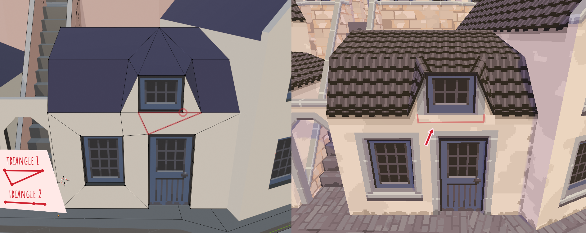
Tutorial 1: Let's Try Out AutoTrimmer by Extending the Sample Project
This tutorial will show you the basics of editing AutoTrimmer levels with Blender. We're starting out by editing the sample project. It's an unusual way to start, but AutoTrimmer can take a bit of work to set it up. This way, we can get going right away.
If you're not experienced with Blender, you're in luck, because it's written for Blender beginners.
Blender
I wrote this tutorial for Blender and you won't be able to follow these instructions without Blender. You don't need to have in-depth knowledge on how to use Blender — I'll explain the things you need to know as we go along.
It's worth noting that AutoTrimmer does not depend on Blender. It only relies
on Godot and is completely independent of the 3D editing software you are using.
However, Godot has some very nice integration for Blender.
You can put .blend files directly into the project, which
is very convenient and saves a lot of hassle exporting 3D files.
The sample project uses a .blend file for its 3D model,
so you won't be able to do this
tutorial without Blender (.blend files can only be opened
with Blender — no other 3D software supports it).
If you haven't used Blender with Godot before, you will have to
change the Godot editor settings so that Godot can find Blender.
Godot needs Blender because, as I said before, no 3D software can work
with .blend files except Blender
(.blend files are too weird to work with).
In the editor settings, search for “Blender” and set “Blender Path” in
FileSystem → Import to where Blender is installed.
On Windows, you need to set it to the .exe file.
Opening the sample scene in Godot
- Make sure that you have the Mono version of Godot 4.4 (or a more recent version of Godot 4). AutoTrimmer requires Mono because it is written in C#. It will not work without the Mono version. (I'm planning to remove the Mono dependency before the beta is over, though)
- Make sure that you have downloaded AutoTrimmer,
and that you put the
AutoTrimmerfolder in a place where you can find it. - In Godot, import and open the Godot project file that you find in the
AutoTrimmerfolder. 4In the Godot editor, open the scenesample.tscnin thesamplefolder.
You should now see the same scene as in the screenshot below. Press the “run current scene” button in the top right corner to try out the sample project.
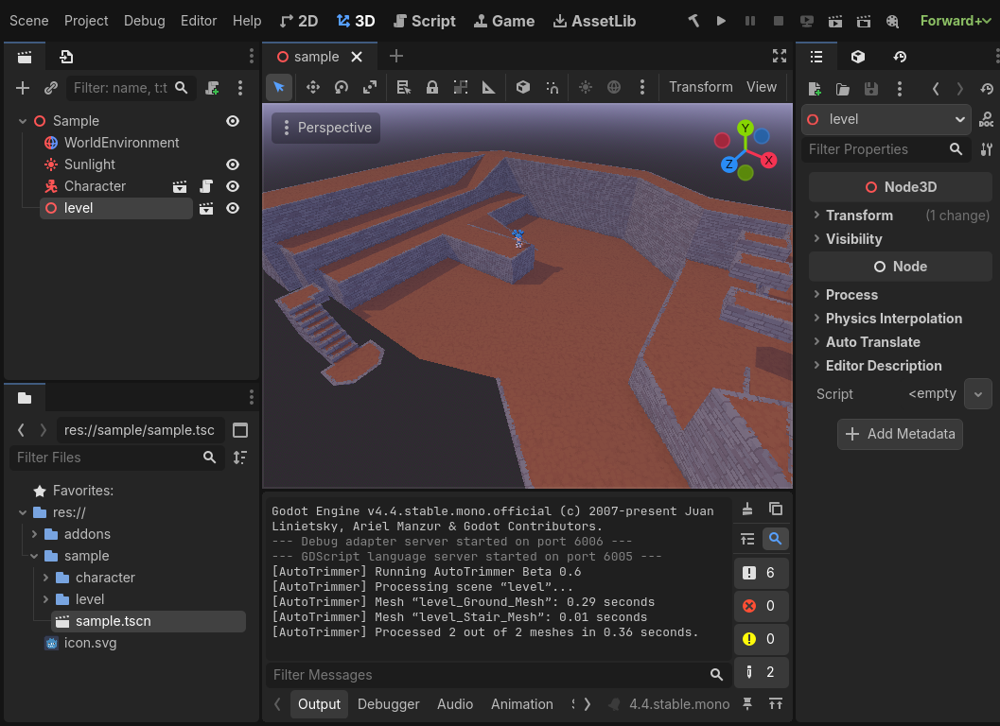
Editing the level
Now that we have the Godot project running, let's try editing the level.
Your first edit
-
First, open up Blender. The sample project comes with a
level.blendfile which was made in Blender 4.4.0. If you have an older version of Blender it may not always work. -
In Blender, load the
.blendfile. Here's the detailed instructions:- In the top left corner, open the “File” menu, then click “Open...” to open a file.
- Navigate to the AutoTrimmer folder.
- Open
level.blend. You can find it in the folderAutoTrimmer/sample/level. If you have multiple copies of the AutoTrimmer folder, make sure that you open thelevel.blendfrom the Godot project that you have open right now.
-
You should now have the level open in Blender. It should look like the screenshot below.
- Moving the view around in Blender takes some getting used to. By default, you can hold down the middle mouse button to rotate the camera, and move the camera by holding down shift and the middle mouse button at the same time.
- If you ever press the wrong button or click the wrong thing,
remember that you can hold down the
ctrlkey and presszto undo anything you didn't mean to do. If you went a little too far undoing things, you can hold downctrlandshiftand presszto redo the last thing you undid. - In Blender, if you somehow get the camera into a bad position or if the
view starts moving really slowly, you can center the view on an object
by clicking on it and then pressing the period
.key on the number pad. That should put your view back in a good position. - If you don't have a number pad on your keyboard, you can click on the
object and then, near the top-left corner of the screen,
in the second row of menus, open the
Viewmenu and clickFrame selected(it's a little tedious this way)
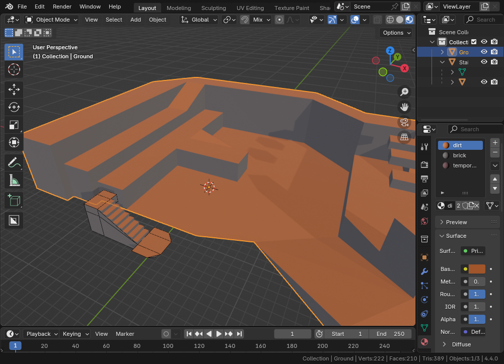
-
Let's make our first edit.
-
When you first open the model, Blender starts in “object mode” (check the second row in the top-left to see which mode you're in). In object mode you can select objects and move them around in the scene.
-
Click on the main part of the level to select it. It should get an orange outline around it.
-
Now open up edit mode. To do this, in the top-left corner, click on the “object mode” dropdown menu and select “edit mode”. In edit mode, you can change the shape of a 3D model.
-
Blender should now look like in the screenshot below.
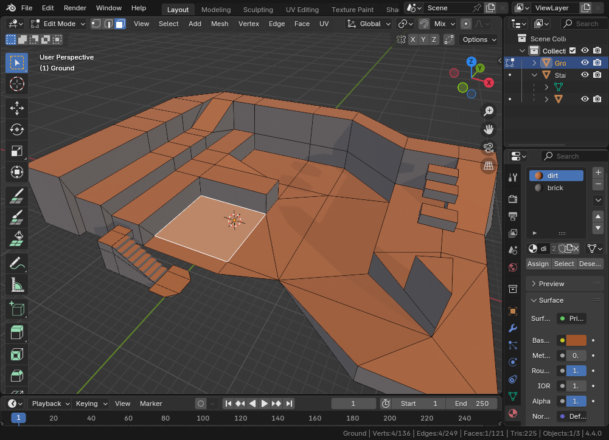
-
Select a part of the 3D model by clicking on it.
-
Select the move tool in the tools menu on the left.
-
Three arrows will appear around the thing you selected. Click and drag the blue arrow to move it up or down. There's your first change!
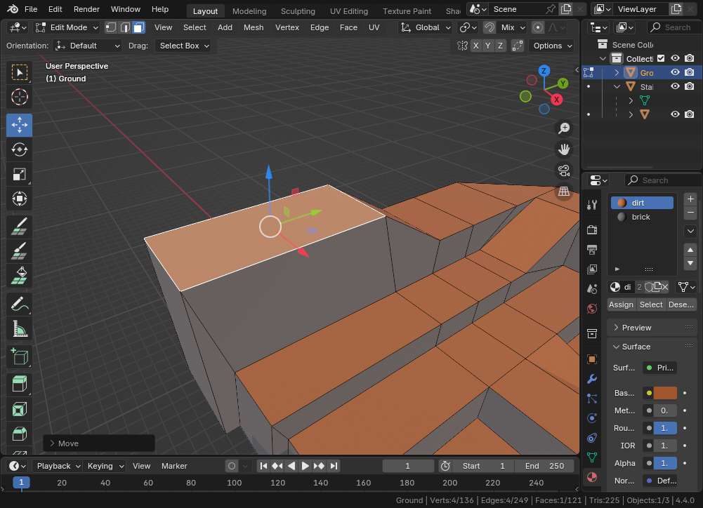
-
Now we're going to look at what AutoTrimmer will do with your change in Godot. Save the file by opening the
Filemenu in the top left and clickingSave.
-
-
Back in Godot, let's see what's changed. After saving the
.blendfile and opening the Godot window, you can see the results of your change. As you can (hopefully) see, your edited part of the level is now decorated just the same way as the rest of the level.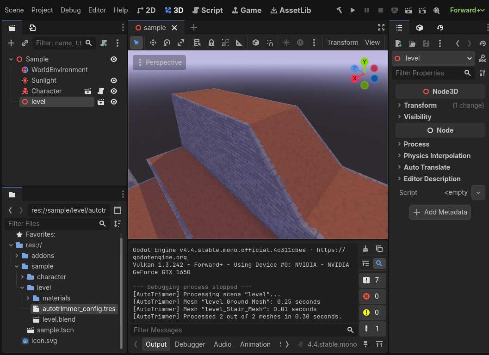
Adding some platforms
Now, let's add some platforms for the character to jump on.
-
First we'll make a single platform.
- In Blender and still in edit mode,
click the
Addmenu (to the right ofEdit Mode) and clickCube. You should now see your new cube, but if you don't, press.on the number pad to focus on it. This cube is going to become our new platform. - Move the cube wherever you like using the move tool.
- You can use the scale tool to change the cube's shape into something that looks a little more like a normal platform in a normal platformer game. You can find the scale tool a little bit below the move tool (it's the icon with a growing square).
- In Blender and still in edit mode,
click the
-
If you save it and go back to Godot, you'll see something like the screenshot below. It will already work as a platform and you can already make the character jump on it. It's just not very nicely decorated yet.
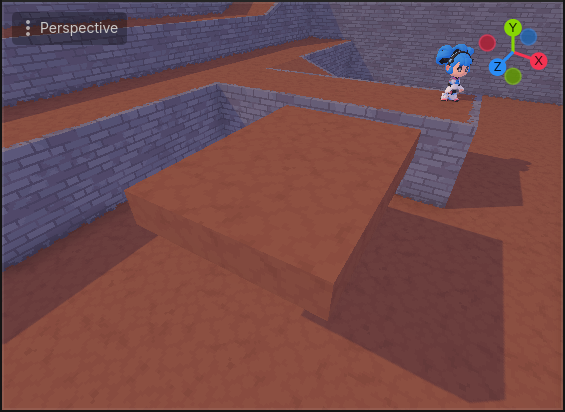
-
Let's add some brick textures to the sides of the platform.
-
Back in Blender and still in edit mode, click one of the sides of the platform to select it. Then select the other sides by holding down
shiftand clicking on them. Also select the bottom, but don't select the top, because we want the top to stay as dirt. -
Now change their material to “brick” by clicking the buttons in the screenshot below. The sides should become grey, like all the other brick surfaces.
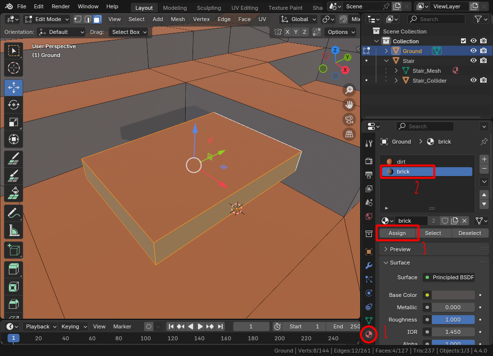
-
Save the Blender file and let's look at it again in Godot.
-
-
Going back to Godot, your platform should now look like the screenshot below. Looks a lot better!
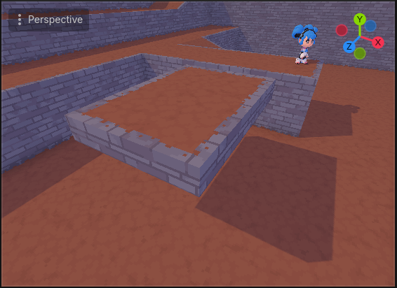
If you want, you can add a couple more platforms, and maybe make some other shapes instead of just rectangles. Here are some hints on how to do that:
- Remember that you can click to select something and
shift + clickto add to your selection. - Hovering your mouse over the platform, press
Lto select the whole platform. - You can make a copy of your platform with
shift + D. Move it around with the move tool. - Next to the “edit mode” dropdown, you can see three buttons. These allow you to edit vertices (corners), edges or faces. Move around some edges or vertices to make your shape a little less square.
- If you hover the mouse over a tool for a second, Blender will tell you that tool's name.
- Try to find the extrude tool — it's a very important tool. It's a little difficult to clearly describe what it does in words, The extrude tool lets you pull new geometry out of your selection.
I'm not going to give a full Blender tutorial (as you can probably see yourself, it's too much for one tutorial). I do give a few tips in the workflow article.
AutoTrimmer is made to work with any weird shape you can think of, so go wild. If it somehow doesn't work in AutoTrimmer, that's probably an AutoTrimmer problem, not a you problem!
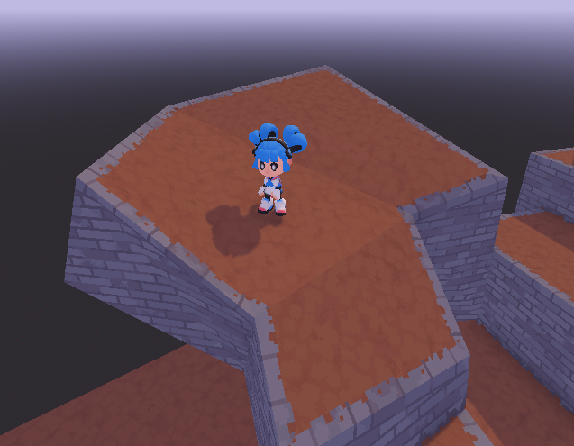
That's the end of this tutorial. If you're ready to move on, you can go on to tutorial 2, where we'll add a new grass surface to the sample level.
Tutorial 2: Let's Add Some Grass
The sample scene looks a little dreary with just bricks and dirt. We can add some grass to make it more lively.
In this tutorial, I'll teach you all about editing an AutoTrimmer rulebook. A rulebook contains all of the settings and rules that AutoTrimmer needs to decorate your 3D model.
You can continue on from the end of the first tutorial.
Adding a new grass surface
In this section, we'll add a new grass surface without any trims (decorative edges) yet. It's going to look pretty so-so by the end of this section, but it's going to start looking a lot better once we add the trims.
-
Go to Blender and open up edit mode for the main level mesh.
-
Select a face of the 3D model that you'd like to turn into grass.
-
Create a new Blender material for the grass. This involves a couple of steps, use the screenshot below to follow along:
- Go to the material settings (its icon looks like a red beach ball)
- Add a new material slot with the
+button. - Create a new material for the material slot,
by clicking
New. - Rename the material to “grass”. The name of the material is very important when working with AutoTrimmer! Pay attention to capital letters and small letters. Later on you're going to have to type this name into the rulebook, and even the capitals will have to match exactly or it won't work.
- Now assign the new grass material to at least one face.
- Give the grass a green color. This helps to make it easier to recognize in Blender.
- Save the file and we'll go back to Godot.
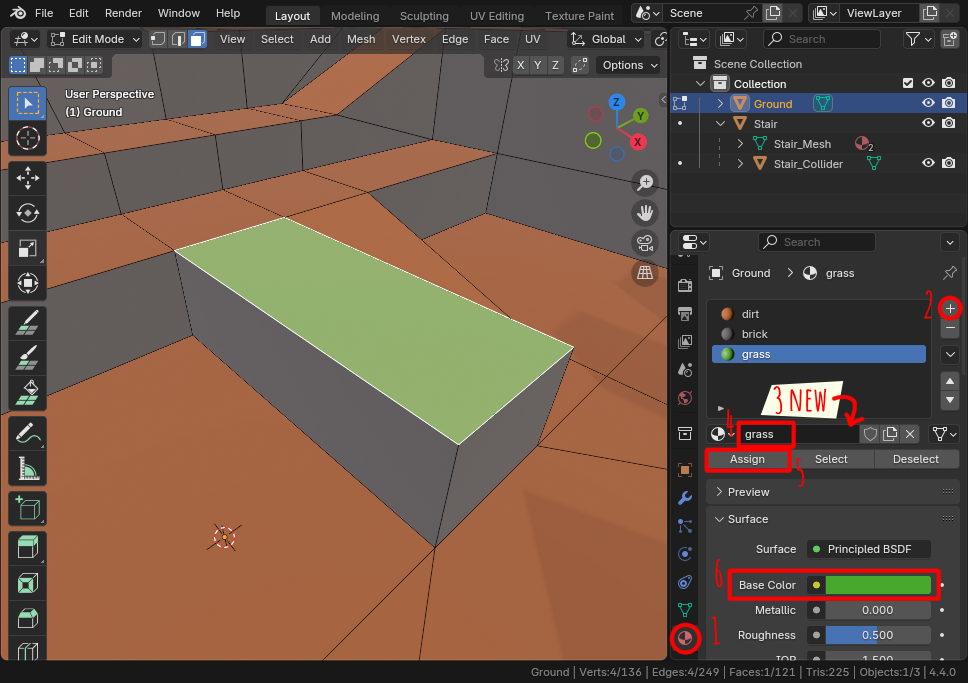
-
Back in Godot, our grass is looking exactly like it did in Blender: Very green and not very textured. Also notice that there's a warning in the “Output” window: AutoTrimmer is telling us that it didn't recognize the grass material. We're first going to need a texture for our grass, but then we'll get right back to Godot and get rid of the warning.
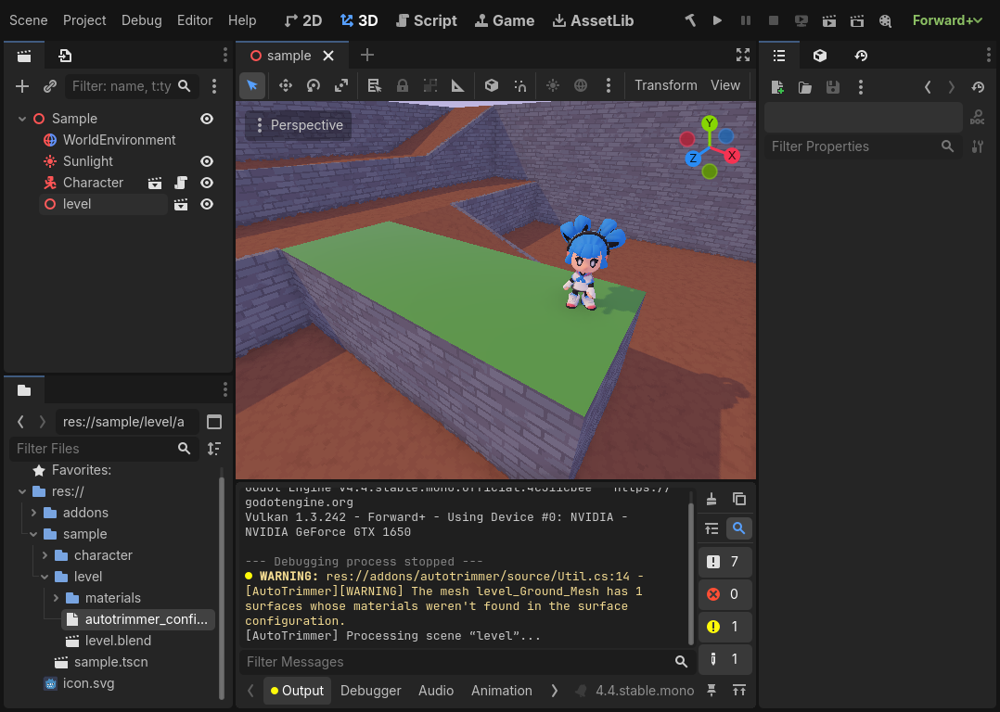
-
We'll need a grass texture next. You can make your own if you want. I made one which you can find below. It's not a great texture, but it will do. You can also swap out the textures later if you want.
-
Here's my texture. Right click on it and select “save as”. Download it and move it into the sample project's textures folder (you can find the textures in
AutoTrimmer/sample/level/materials/textures).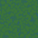
-
-
To use this texture in Godot, we will also need a Godot material. We'll use the same shader that the brick and dirt materials already use.
- In Godot, open up the folder
sample/level/materialsand duplicate eithertiling_brick.tresortiling_dirt.tres(right click on one of the files, then click “Duplicate”). Give the new file the nametiling_grass.tres. - Double-click the new
tiling_grass.tres, unfoldShader Parameterson the right, and changeMain Textureto the grass texture. - Just now, when you put the texture in the material,
you probably received a notification from Godot that it changed the
texture's import settings because it's being used in 3D.
What it did was configure the texture to use compression.
The problem is that this compression will often worsen your pixel art
for not a lot of memory savings.
To disable texture compression, double click
tiling_grass.png, and in the import settings (on the top left), change “VRAM Compressed” to “VRAM Uncompressed”.
- In Godot, open up the folder
-
Now, let's add the grass surface to AutoTrimmer.
-
In the folder
sample/level, double click onrulebook.tres. This file contains all of the settings and rules that AutoTrimmer will use to decorate your 3D model. If you want an explanation for the settings that you find in the rulebook, check the rulebook documentation. The documentation is written to be pretty easy to understand. -
Unfold
surfacesand click on theArraybutton. You'll see the list of surfaces that AutoTrimmer knows about right now. At the moment, there's three surfaces: Dirt, brick and “trims”. The dirt and brick surface are based on the 3D model. The “trims” surface does not appear in the original 3D model, but will get added by AutoTrimmer when it processes the file. It has all the trims (edge decorations). -
Click
Add element(below the list of surfaces) and add aNew SurfaceConfiginto the empty slot that appears. Click onSurfaceConfigto open up the surface settings. -
You need to adjust the following settings:
-
Set “Name” to “grass”. This must match the material name in Blender exactly, or AutoTrimmer won't recognize it. Capital letters matter!
-
For “Replace with material”, click on the dropdown and select
Quick Load.... Find and use the materialtiling_grass.tres. -
Set “UV unwrap mode” to “unwrap”. This basically makes the textures appear correctly. For more information on what this does, check the documentation for “UV unwrap mode”.
-
Lastly set “Texture size source” to the grass texture.
AutoTrimmer uses a surface's texture size to determine how often the texture should tile. By setting “texture size source” instead of “texture size pixels”, it will automatically derive the texture size from the image that you give it. That's useful because you'll be able to overwrite the image with one that's bigger later, without having to touch the rulebook (I use this in the early stages of making a rulebook because making big textures takes a while).
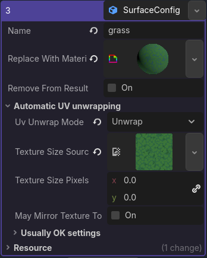
-
-
Now that we've configured the grass surface, AutoTrimmer should recognize it the next time that it processes the 3D model. To make AutoTrimmer process the 3D model immediately, right click on
level.blendin Godot, and click “Reimport”.
-
You should see a patch of grass now. I have to admit: My grass texture isn't that great, but we should always strive do the best we can with the art skills we have. Even with my limited grass-drawing skills, it's going to look a lot nicer when we add the trims.
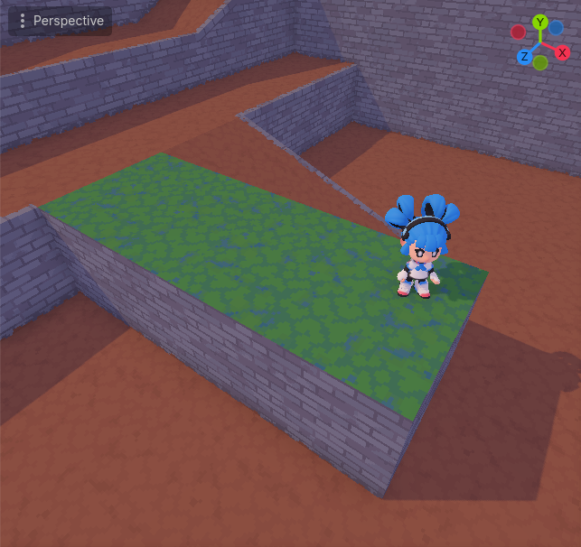
Adding a decorative edge around the grass
Alright, time to make it look somewhat good. We're adding a new grass trim that's going to droop over walls. It's also going to function as a nicer transition between grass and dirt.
If grass is at the bottom of a wall, this new trim is also going to climb up the wall a little bit. That's going to look kind of OK but also a little weird. If I was making a bigger project out of this, I'd probably make a separate trim for that, but it's a tutorial, so we're keeping it simple.
-
Here's a new trim texture.
- Download it just like before.
- Overwrite the old
trims.pngin the textures folder with this one. - You'll notice, after overwriting it, that the trims all look broken when opening Godot. That's actually not a problem, just reimport the mesh and AutoTrimmer will fix it. What happened is that the new texture is bigger than the old one, so it needed new texture coordinates. AutoTrimmer gave it new texture coordinates while processing the mesh.
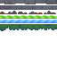
-
Add the trim to the rulebook.
- Open up the rulebook as before.
- Unfold the
trimssection and open up theTrimsarray. We won't be using trim corners or trim groups in this tutorial. Only trims. Check the rulebook documentation later if you want to learn more about trim corners and trim groups. - Add a new trim. Here's the settings you'll need to adjust on the newly
added TrimConfig:
- Change its name to “grass_trim”.
- Change “pixel y near” to 27 and “pixel y far” to 34. These options are pretty important. They determine where in the trimsheet (trim texture), we can find this trim. There's a more in-depth explanation in the documentation.
- Save your changes to the rulebook by pressing
ctrl + S. - AutoTrimmer now knows about the trim “grass_trim”, but we haven't told it to place the new trim anywhere yet. To tell AutoTrimmer where it needs to add the trim, we'll need to add an edge rule.
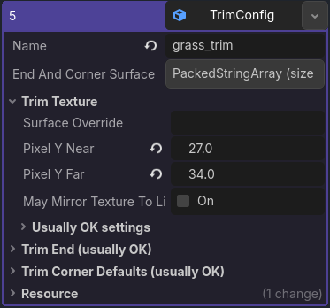
-
Add an edge rule.
-
Unfold
rulesand create a new edge rule. -
In the new edge rule, set “add trim at neighbor” to “grass_trim”. This way, when the condition is met, AutoTrimmer will add a grass trim to the edge.
-
For “condition”, paste in the following code:
self.surface == GRASS and neighbor.surface != GRASSThis is going to add the grass trim to all edges between a grass surface and a non-grass surface. In the code, the name of our surface “grass” is turned into “GRASS”, in UPPER_SNAKE_CASE.
You don't need to understand the code for edge rules well to be able to use AutoTrimmer productively. There's a recipe book, which gives you examples that you can more or less just paste into your rulebook.
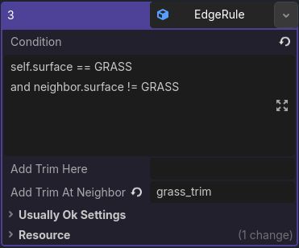
-
-
Save your changes to the rulebook by pressing
ctrl + S, then reimportlevel.blendto see the changes. You should now have some grassy trims.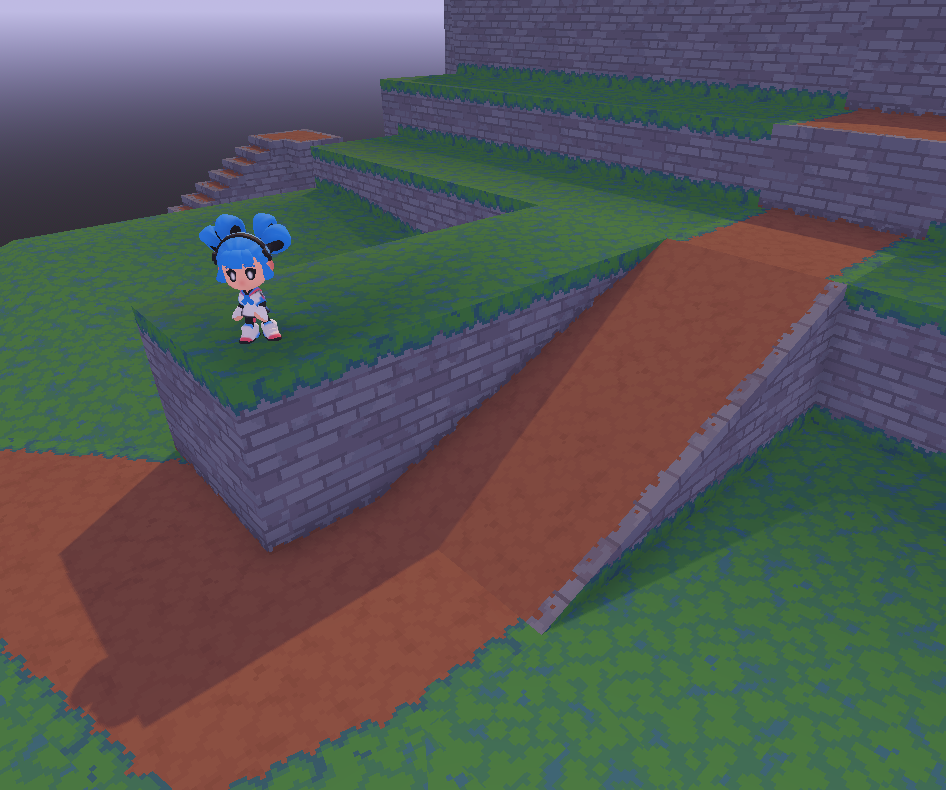
That's the end of this tutorial. If you want, you can mess around with the level a little and try out the grass surface that you just put together.
Optional: Adding another trim for grass at the bottom of a wall.
The current trim texture looks OK for grass drooping over a wall, but in my opinion it's as good for grass at the bottom of a wall. It would look a lot better to use a separate trim for that.
If you want, you can try creating your own grass trim as practice.
For the new trim you'll need a new edge rule. Try this one:
self.surface == GRASS
and neighbor.surface != GRASS
and angle < -40
This rule will add the new trim to all edges between a grass surface and a non-grass surface, but only when the corner is more than 40° concave. This makes the grass trim only show up in the corners where it will be at the bottom of a wall.
Now, you can either place the new edge rule before the old grass edge rule (which will make the new rule evaluate first, which means it will take up all the spots where it can fit), or you can replace the old rule with this one:
self.surface == GRASS
and neighbor.surface != GRASS
and angle >= -40
Installation Guide
In this guide I'll show you how to set up AutoTrimmer in your own projects.
Note: The installation currently requires editing a small XML file in your Godot project. In my personal opinion it's not super difficult, and I try to explain it clearly. If you're not completely averse to doing IT tasks with a guide, you can probably handle it. Otherwise, if you've got a team with a programmer, it might be easier to let the programmer handle it.
Godot requirements
AutoTrimmer requires the Mono version of Godot to run because it is written in C#.
Author's note: I'm planning to remove the Mono requirement before the end of the beta. It should eventually work with just GDScript and GDExtension.
AutoTrimmer is known to work on Godot 4.4 and will most likely run without issues on later versions of Godot 4. It has not been tested on earlier versions of Godot 4. It seems very likely that it will also work for earlier versions, since AutoTrimmer only uses parts of Godot that haven't really changed since the first release of Godot 4.
Installation
Here's how to install AutoTrimmer into a Godot project:
-
Copy the
addonsfolder from the AutoTrimmer folder into your Godot project folder. If you already have anaddonsfolder in your Godot project, you should merge the two folders together. -
If you weren't already using C#, you will need to make a C# solution. You can do this by opening up the Godot editor, then, in the top left, clicking the menu buttons
Project → Tools → C# → Create C# solution. -
This step is a little tricky: AutoTrimmer uses a C#
.dllfile for most of its logic. You'll need to edit the C# project file to make it work.Author's note: This step won't be necessary anymore when I remove the Mono requirement, which is going to happen before the beta is over.
Here's how you do it:
- On Windows, open up Notepad, which comes preinstalled with your computer. On other operating systems (Mac, Linux), open up whatever text editor your OS ships with that can edit source code files.
- In Notepad, open the file that ends with
.csprojin your Godot project folder. This file is hidden in the Godot editor, but you should be able to see it in Notepad's open file window. - Before you edit the file, it should look something like this.
It might look a little different if you have a more recent version of Godot,
but the same install instructions will apply.
<Project Sdk="Godot.NET.Sdk/4.4.0"> <PropertyGroup> <TargetFramework>net8.0</TargetFramework> <EnableDynamicLoading>true</EnableDynamicLoading> </PropertyGroup> </Project> - Create a new line between the last two lines
(between
</PropertyGroup>and</Project>). Then paste in this snippet over there:
(This adds the library<ItemGroup> <Reference Include="AutoTrimmer"> <HintPath>addons/autotrimmer/AutoTrimmer.dll</HintPath> </Reference> </ItemGroup>AutoTrimmer.dllto the project) - Your
.csprojfile should now look something like this:
Unlike in GDScript, the spaces aren't important here. If the spaces are a little bit off in your own version, that's fine.<Project Sdk="Godot.NET.Sdk/4.4.0"> <PropertyGroup> <TargetFramework>net8.0</TargetFramework> <EnableDynamicLoading>true</EnableDynamicLoading> </PropertyGroup> <ItemGroup> <Reference Include="AutoTrimmer"> <HintPath>addons/autotrimmer/AutoTrimmer.dll</HintPath> </Reference> </ItemGroup> </Project> - If you think it's probably good, save the file.
-
Now we need to build the C# project. In Godot, press the button with the hammer icon in the top right corner.
- It should build with no problems and no errors.
- If you get errors saying “namespace name 'AutoTrimmer' could not be found", then you made a mistake in the previous step, and it still can't find the AutoTrimmer library.
-
Lastly, enable the AutoTrimmer plugin. Here's how:
- Open up the project settings (
Project → Project Settingsin the top left) - Switch to the
Pluginstab. - Enable the AutoTrimmer plugin by clicking the
Enabledcheckbox. - If you close the project settings and look at the
Outputwindow, you should see the message[AutoTrimmer] Running AutoTrimmer, as well as the version of AutoTrimmer that you're running.
- Open up the project settings (
If everything went right, AutoTrimmer is installed and ready to go. If you had any issues, don't hesitate to reach out to me for technical support.
Adding a rulebook and processing a 3D model
Now that AutoTrimmer is installed, we can start using it.
- Create a 3D model and put it in your project folder. It doesn't matter which 3D format you pick as long as Godot accepts it.
- Let's create a new rulebook
- In Godot, right-click a folder in the filesystem window, then click
Create New → Resource... - In the
Create New Resourcewindow, search for “RuleBook”. - Put your new rulebook somewhere in the project. If you can't think of
a good filename, you can simply call it
rulebook.tres.
- In Godot, right-click a folder in the filesystem window, then click
- Let's configure your 3D model to use the rulebook.
- Open up the import settings for your 3D model by double-clicking on it.
- In the window that pops up, you can find “AutoTrimmer” among the settings on the right side.
- Under AutoTrimmer, put your rulebook into the rulebook option. (Due to a Godot bug, it seems that the quick load window can appear underneath the import pop-up. You can drag it out of the way if that happens)
- Now you can start configuring the rulebook. Check the rulebook documentation, tutorial 2 and the recipes for more information.
- Once you have configured the rulebook, right-click on your 3D model file and click “Reimport” to make AutoTrimmer process the mesh. If there's anything wrong with your rulebook, you will get an error in the “Output” tab that describes what the mistake is and roughly where it is.
Trim shader
If you now add a trim to your mesh, it's going to look more or less like this:
Trims generated by AutoTrimmer need a special shader to work. Without a special shader, you'll get lots and lots of z-fighting.
In 3D graphics, z-fighting happens when there are two faces at the exact same depth. They end up “fighting” over which face is in front, with one face winning for some pixels and the other face winning for other pixels.
AutoTrimmer will place trims at exactly the same depth as the face that the trim is applied to. This is honestly begging for z-fighting to happen.
To fix it, you'll need some special shaders for the trims. These shaders give the trims a small depth bonus, which ensures they'll win the z-fight. I've put a few GDShader scripts below which you can paste into your project. You will then need to make a new ShaderMaterial for your trims, which uses the shader below.
IMPORTANT: These shaders don't work in the orthographic view of the Godot editor. I think it doesn't work because orthographic view puts the camera too far away. In perspective it works quite well.
Note: The only difference between these shaders is the fragment shader. The vertex shader is the important part and is the same for all of them. That's what's being used to apply the depth bonus to trims.
Transparent
This transparent shaders works with all transparent textures. The downside of a transparent shader is that it is less efficient than a clipped or an opaque shader, for graphics engineering reasons that are a little too complex to get into right now.
shader_type spatial;
render_mode skip_vertex_transform;
const float base_depth_bonus = 0.0001;
const float layer_depth_bonus = 0.0001;
uniform sampler2D main_texture: source_color, hint_default_white, filter_nearest;
void vertex() {
vec4 view = MODELVIEW_MATRIX * vec4(VERTEX, 1);
// AutoTrimmer adds a "layer" attribute to the trim surfaces, which
// is used to prevent overlapping trims from z-fighting.
// The layer attribute is stored in CUSTOM0.x.
float layer = CUSTOM0.x;
// Put the vertex a little closer to the camera to give it a small benefit
// in a z-fight.
float final_depth_bonus = base_depth_bonus + layer * layer_depth_bonus;
VERTEX = view.xyz * (1.0-final_depth_bonus);
// Because of "skip_vertex_transform".
NORMAL = normalize((MODELVIEW_MATRIX * vec4(NORMAL, 0.0)).xyz);
BINORMAL = normalize((MODELVIEW_MATRIX * vec4(BINORMAL, 0.0)).xyz);
TANGENT = normalize((MODELVIEW_MATRIX * vec4(TANGENT, 0.0)).xyz);
}
void fragment() {
vec4 sample = texture(main_texture, UV);
ALBEDO = sample.rgb;
ALPHA = sample.a;
}
Clipped transparency
A clipped shader has binary transparency, meaning that a pixel is either 100% opaque or 100% transparent. It's more efficient than a normal transparent shader, but less efficient than an opaque shader.
shader_type spatial;
render_mode skip_vertex_transform;
const float base_depth_bonus = 0.0001;
const float layer_depth_bonus = 0.0001;
uniform sampler2D main_texture: source_color, hint_default_white, filter_nearest;
void vertex() {
vec4 view = MODELVIEW_MATRIX * vec4(VERTEX, 1);
// AutoTrimmer adds a "layer" attribute to the trim surfaces, which
// is used to prevent overlapping trims from z-fighting.
// The layer attribute is stored in CUSTOM0.x.
float layer = CUSTOM0.x;
// Put the vertex a little closer to the camera to give it a small benefit
// in a z-fight.
float final_depth_bonus = base_depth_bonus + layer * layer_depth_bonus;
VERTEX = view.xyz * (1.0-final_depth_bonus);
// Because of "skip_vertex_transform".
NORMAL = normalize((MODELVIEW_MATRIX * vec4(NORMAL, 0.0)).xyz);
BINORMAL = normalize((MODELVIEW_MATRIX * vec4(BINORMAL, 0.0)).xyz);
TANGENT = normalize((MODELVIEW_MATRIX * vec4(TANGENT, 0.0)).xyz);
}
void fragment() {
vec4 sample = texture(main_texture, UV);
if (sample.a < 0.5)
discard;
ALBEDO = sample.rgb;
}
Opaque
An opaque shader is a shader that does not support transparency at all. Every pixel is 100% opaque. This is somewhat more efficient than the other two types of shader above.
shader_type spatial;
render_mode skip_vertex_transform;
const float base_depth_bonus = 0.0001;
const float layer_depth_bonus = 0.0001;
uniform sampler2D main_texture: source_color, hint_default_white, filter_nearest;
void vertex() {
vec4 view = MODELVIEW_MATRIX * vec4(VERTEX, 1);
// AutoTrimmer adds a "layer" attribute to the trim surfaces, which
// is used to prevent overlapping trims from z-fighting.
// The layer attribute is stored in CUSTOM0.x.
float layer = CUSTOM0.x;
// Put the vertex a little closer to the camera to give it a small benefit
// in a z-fight.
float final_depth_bonus = base_depth_bonus + layer * layer_depth_bonus;
VERTEX = view.xyz * (1.0-final_depth_bonus);
// Because of "skip_vertex_transform".
NORMAL = normalize((MODELVIEW_MATRIX * vec4(NORMAL, 0.0)).xyz);
BINORMAL = normalize((MODELVIEW_MATRIX * vec4(BINORMAL, 0.0)).xyz);
TANGENT = normalize((MODELVIEW_MATRIX * vec4(TANGENT, 0.0)).xyz);
}
void fragment() {
ALBEDO = texture(main_texture, UV).rgb;
}
Conclusion
By now, your AutoTrimmer installation is hopefully working as intended! If you're having trouble, don't hesitate to send me a message. I'll do what I can to help you out.
If you're ready to get started for real, you can move on to the workflow article, where I take you through the steps of making a scene with AutoTrimmer.
Workflow
At the time of writing, AutoTrimmer is still very new. I don't have a huge amount of experience with it myself yet. However, since I've got more experience than anyone else, I figure it's best to write down my thoughts on how to make environments with it.
Below, you can see my main creative project with AutoTrimmer so far. What you see took around three or four days of work. I am not a very fast artist and textures take me a long time, so a more experienced artist could probably do more in less time.
Getting started
To get started, you're going to need some textures for your surfaces and trims. For my church project, I used a mockup drawing to both establish the initial idea and get my first textures.
Mock-up drawing
Below is the original mockup drawing that I made for the project. It isn't much (just a house), and I ended up taking things in another direction, but it was enough to help me get started. I drew this from a videogamey perspective where everything is seen from the front and everything takes up a full square. This let me copy-paste a lot of the textures from the mockup. This way of working saved me from doing a lot of work twice: I could establish the idea and draw textures at the same time.
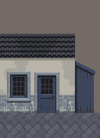
Extracting the textures
Figuring out the textures for surfaces is not that difficult. It's pretty obvious what the surface texture should be. On the other hand, for the trims, you need to pay special attention to all the changes that you make to the mockup to make the edges look nice.
In the drawing above, these are the trims that made it into the final project:
- Molding around the windows and doors. In the final project, the dark edges of the molding are on the inside, instead of on the outside.
- A roof ridge that's subtly different from the other rooftiles.
- The roof's eave, with a shadow casting onto the wall below it.
- A bit of grime at the bottoms of the walls.
There's also a couple of things that didn't make it in:
-
The stone lower half of the wall didn't make it in because I wasn't quite happy with the texture. If I had liked the texture better, I would have turned it into a surface that I could apply on the bottom parts of walls.
-
The wooden shed didn't get all the way to the final project. If you look very closely, you might be able to see that the lines inbetween the planks are darkened a little at the top and the bottom. Replicating that coloring was a little too complex. A simple trim with a dark line every so often would only work for the bottom edge of the shed, because the top edge beneath the roof is slanted.
With some shader work (vertex color tricks) this could be possible, but it felt like too much effort.
Tiling textures
Tiling textures should usually be about four or five meters large in the world. If the texture is meant to have a regular pattern (like floorboards or tiles) you might be able to get away with a smaller texture. On the other hand, if you have a huge 20 by 20 meter brick wall with nothing to break up the texture, you might want a larger texture so that you can make it less obvious that the texture is repeating.
There's also a tech art trick to make repeating textures less obvious. It's called “stochastic texture sampling”. However, the typical implementations of this trick won't work with pixel art, so unless you're an expert at shaders you may have a hard time getting it to work well.
Trimsheet
For your trimsheet, you need to take all of your trims, rotate them to be horizontal, and put them in an image. Below is an example. I made the background green so you can see it better — it used to be transparent.
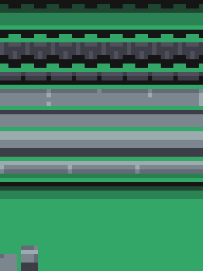
Here's the trims from top to bottom:
- Four roof trims: The two up top are for the eave (which is the bottom end of the roof) The first one is for the wall side of the eave edge, the other is for the roof side of the eave edge. Then two different variants of roof ridges.
- Three trims for the molding: Side, top and bottom. The top trim is upside-down here. That's why it's shadow edge is up top.
- One trim for the coping.
- Another trim for the roof: This one is used for the rake, which is the slanted side of the roof.
There's also two corner textures in the bottom-left. Those are both used in the molding. The one on the left connects the top molding trim to the side trim, and the other one connects the bottom trim to the side trim.
Sidenote: weird resolution
This trimsheet is 48 by 64 pixels, which is a rather weird size for a texture. The width and height of a texture are usually a power of two, like 32, 64, 128 or 256.
I made the texture this wide because for the church project I made world units 24 pixels wide. I did that because the number 24 has some nice properties (you can divide it by a lot of numbers, such as 3).
In theory you should always make sure that your texture sizes are a power of two, or you'll have graphics engineers frowning at you. Fortunately there weren't any graphics engineers involved in the project, so there was nobody to frown at me, and I haven't had any problems with the unusual texture size. Weird texture sizes are probably kind-of fine for pixelart, because low-poly pixelart environments don't demand the utmost performance from the computer.
Making a rulebook
Once you have your textures, it's time to start making a rulebook.
Check tutorial 2 if you need an overview of the steps involved in making a rulebook. I do it in roughly this order:
- Add the surfaces.
- Add the trims (and trim groups when necessary).
- Add the trim corners if you have any.
- Add the edge rules.
I made a 3D model with a few houses to test my rulebook while I was working on it.
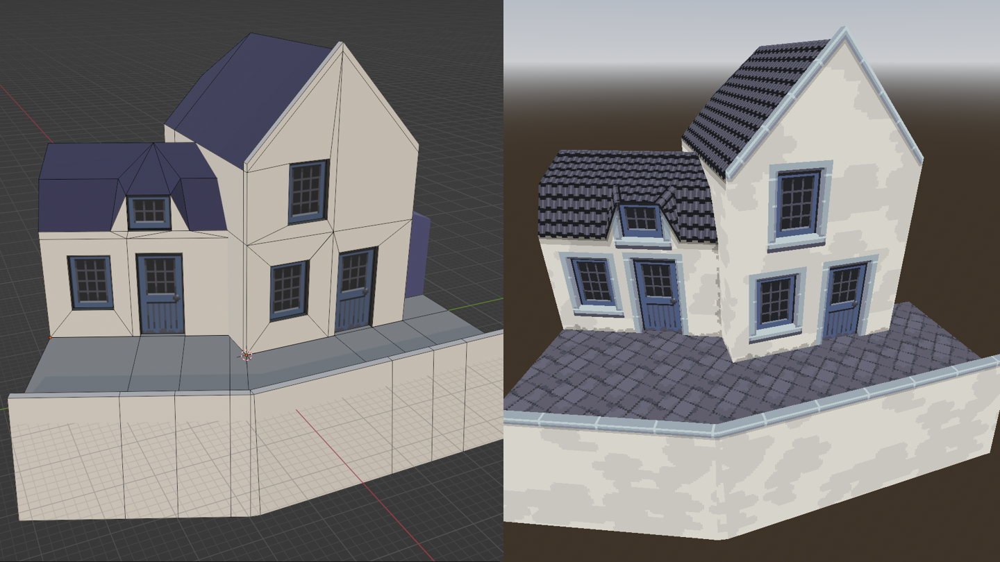
Some things to note about these houses above:
-
The topology is pretty messy, with a bunch of n-gons on the building on the left. Fortunately, N-gons are usually fine in AutoTrimmer. It all gets turned into triangles by the game engine anyways.
However, with quads and n-gons, you can get missing trims if one of the corners of the face is a 180° corner. This is more of a Blender export issue than an AutoTrimmer issue. See “missing trims” for more information.
I personally leave the n-gons in, and only split them up if I can see that it leads to an issue.
-
The rooftiles are unwrapped better in the test project than in the final project. That's because I was editing object origins to try to reduce the amount of UV seams for the test. For the final project I didn't think it was worthwhile. A few weird texture coordinates don't ruin an environment as long as the big picture is good.
In the future, I want to make a much fancier version of the UV unwrapping code (although it's still uncertain, because it's quite a research project). For now, I'm just living with it. You can manually unwrap it fairly easily if you need to — although you can't use both manual unwrapping and automatic unwrapping for the same surface. What you can do, is make another surface that ends up getting turned into the same Godot material.
Modelling
Once you have a couple of surfaces and trims, you can start 3D modelling.
Working with AutoTrimmer is a pretty short process compared to a normal 3D modelling workflow, so this is also the last step of the process. You basically only need to make a block-in of the 3D model, perhaps UV unwrap some of the faces, and you can let AutoTrimmer handle the rest.
The church project
Here's a screenshot of the church project in Blender:
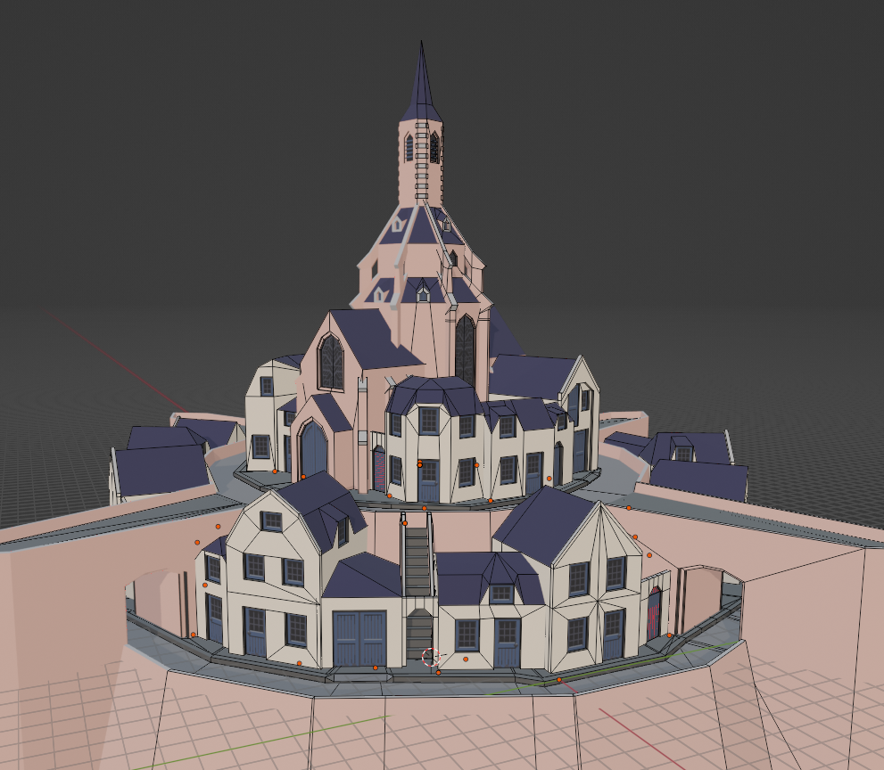
There's a couple of things I want you to notice here:
Both automatic and manual UV unwrapping
Although the walls and floors are unwrapped by AutoTrimmer, the windows and doors are manually UV unwrapped. I made a few windows and doors and copy-pasted them onto most of the buildings. AutoTrimmer can automatically unwrap tiling textures like bricks and tiles, but it's no good with windows and doors. You have to UV unwrap those manually.
Another thing to note here: When you're using AutoTrimmer, you can use AutoTrimmer's functionality as much or as little as you like. AutoTrimmer won't mess with UVs or add trims when you don't ask it to, so you can use it for only the parts where it's helpful.
Unrefined topology
Frankly, the topology is rather messy. I basically made a block-in with the right shape and then tossed that into AutoTrimmer.
When you're doing a full 3D workflow, with UV unwrapping involved, I think there's a good reason to go for a clean topology: A clean topology makes UV unwrapping a lot easier.
With AutoTrimmer you can afford to be a lot lazier. You don't necessarily gain anything from a clean topology here, because the computer doesn't care — it's just drawing triangles — and AutoTrimmer doesn't care unless the triangles are ill-defined. The concept of a clean topology is something that mostly exists among 3D artists.
Now, triangles are usually not ill-defined, but there's a circumstance where Blender can output triangles that have zero surface area — meaning that the three corners form a line or a point instead of a proper triangle. This can only happen with quads and n-gons where one of the corners of the face is a 180° corner. For more information on when this happens and how to fix it, check the section on missing trims in troubleshooting & workarounds.
There's one last thing to note: Blender's loop cut tool only works well with quadrilaterals. Not triangles or n-gons. That's a valid reason to prefer quads over n-gons.
Blender advice
AutoTrimmer works with any 3D editing software, but I personally use Blender. Here's some advice for fellow Blender users.
Hotkeys
In tutorial 1, I taught you to use Blender with gizmos (the arrows that you can click and drag to move things). I actually never use gizmos myself and instead use hotkeys for all of the common operations. Hotkeys let you edit things super fast. You will be a man of speed (or woman of speed).
It takes a lot of getting used to, though.
Here's the hotkeys you should know:
- Undoing your screw-ups
ctrl + zto undo your latest screw-up. Whenever you screw up, press this.ctrl + shift + zto redo
- Basics
gis used to move the selection (“g” stands for “grab”). By default it probably doesn't do what you want it to do. While moving, pressx,yorzto restrict it to just one axis. Then it should be a lot more useful. Also hold downctrlto make it snap.sto scale. You can once again usex,yandzto restrict the axis.rto rotate. This timex,yandzdetermine the rotation axis.eto extrude.ctrl + rto loop cut. Useful when you need to split a face.kfor the knife tool. This lets you cut new edges into a mesh. If you want to make the new edges more exact, the “snap to grid” option in theshift + smenu can be useful (along with my later advice on changing the grid size).xto delete.ato select everything, or twice to deselect everything.tabto switch between edit mode and (usually) object mode.
- Hiding
hto hide the selection.shift + hto hide everything except the selection.alt + hto unhide everything.
- Fixing a mesh
xto delete. “Faces” is usually the most useful option and will delete only what you had selected. The “vertices” option is the nuclear option that deletes everything connected to the selection. The other options are rarely useful.fcan be used to make new faces. Select the edges of the new face and tapf.mto merge vertices together. Especially “merge by distance” is very useful for when you have two vertices that look like they're in the exact same position, but which don't count as the same vertex.shift + xto remove an unnecessary vertex or edge.
- Sometimes useful
lto select everything that's connected to a face (useful for more complex meshes where some parts are disconnected)- Tap
gtwice to glide a vertex along an edge that it's connected to. Pressconce it's on the right edge if you want to go the other way.
Advice for making buildings
Here's some general advice for making buildings in Blender:
-
Vertex snapping is super useful. It lets you move the selection to the exact x, y, or z-coordinate of another vertex. If you want to snap (for example) the y and z coordinates at the same time, you can use
shift + x.You can find the snapping settings in the menu with the magnet icon at the top of the 3D viewport. While moving some vertices, you can enable snapping by holding down
ctrl. I also recommend turning on snapping for rotation (in the same menu).If you want to use increment snapping and vertex snapping at the same time, you can
shift + clickon snapping modes to enable multiple snapping modes. I almost always have both increment snapping and vertex snapping enabled.Edge and face snapping are also sometimes useful, but I usually keep them off unless I need them.
-
If you're working with faces that aren't aligned with the grid, you should know about the “transform orientations” menu. This one is only useful in certain situations, so you can skip this if you feel like you've already learned enough for today.
Short description for mathematics people: The transform orientations menu lets you pick a custom set of basis vectors. Very useful for axis constraints.
In Blender, you'll probably very often use the
x,yandzkeys to restrict in which directions you can move the selection. By default, these keys restrict you to moving things on the scene's right, forward and up directions.If you want to restrict movement to different directions, you can use the “transformation orientation” menu to pick out which directions you want to restrict it to. The “transformation orientations” menu is to the left of the snapping menu. It has an icon of three arrows and says “Global” by default.
Sometimes you're working with faces that are rotated so that they aren't aligned to the grid anymore. For those situations, a very useful feature is the ability to add a custom set of directions with the “transformation orientations” menu's plus button. Select a face and press the button, and you'll get a set of directions based upon the face you had selected, with the x-axis and y-axis being parallel to the face and the z-axis being perpendicular to the face.
It's difficult to explain in words, but it will likely be much more clear if you try it out!
Advice for working with pixel art in Blender
Here are some tips for working with pixel art in Blender:
-
In Blender, you can change the size of the grid to match the pixel size that you're using. It's useful for increment snapping, and you can also use
snap to gridin theshift + Smenu to align all your vertices to the pixel grid.To change the size of the grid, search “unit” in the properties panel and set “Unit System” to “none” instead of “metric”. After you've done that, you can go to the “viewport overlays” menu (in the top-right of the 3D viewport, icon has two circles), and it will now let you change “scale” and “subdivisions”.
If you're using 16 pixels per world unit, type in “1/16” for scale and “16” for subdivisions. Otherwise, substitute “16” with the right amount of pixels per world unit. Now the grid should be the size of a pixel. You can change it back to normal by using “1” for scale and “10” for subdivisions.
-
When you're unwrapping UVs for pixel art textures, it's nice if the UVs snap to pixels. In Blender's UV editor, open the
UVmenu, then the submenuRound to Pixelsand then set it toCorners. The next time you edit UVs, it will snap your selection to the texture's pixels. -
This add-on can help to make UV unwrapping pixel art a lot less work: Noio's Pixel Unwrapper.
That's all the advice I've got
Recipes
AutoTrimmer is all about decorating edges. Just decorating edges might not sound so powerful at first, but in truth a large part of the work in an environment art project can be boiled down to decorating edges. With a bit of creativity, you'll find plenty of things that you can do with “just” decorating edges.
On this page you can find a number of useful examples to help get you started. Creating a rulebook can be tricky at first, but just keep in mind that you only have to make the rules once. Once you've got a rulebook, you can reuse it and make as many environments with it as you like.
I'm assuming you already have AutoTrimmer set up and ready to go. If not, check out the tutorials first.
- Convex corners: decorating the pointy edges
- Concave corners: decorating the inwards corners
- Coping: decorative stone edges
- Molding: decorations around windows and doors
- Roofs: rooftiles, ridges and eaves
Convex corners: decorating the pointy edges
This is one of the most basic tricks but also likely the most useful. Here's just a few examples of what this can do:
- Showing a row of bricks at the top of a brick wall.
- Adding a transition between grass and the top of a cliff.
- Adding edges to the platforms in a platformer game.
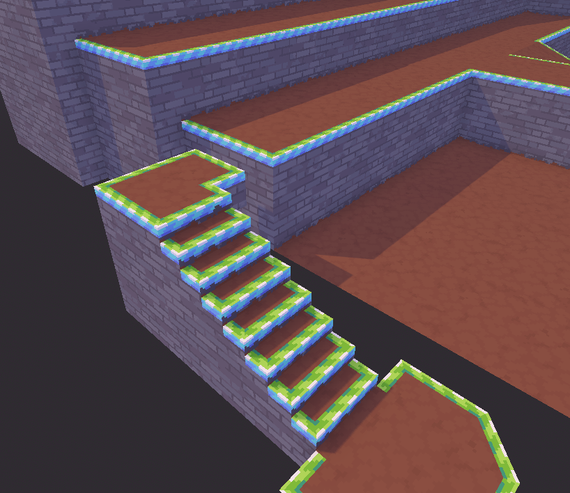
Here's how to do it:
- Draw one or two trims onto your trimsheet. If you look at the picture above, one of these trims is going to replace the green trim and another one can replace the blue trim. They can be however wide you want them to be (although when a trim is wider than the face that it's on, it can lead to subtle graphics glitches).
- Add the trims to your rulebook. For each of your trims, do the following:
- In your rulebook, create a new trim.
- Give them a name. Try to give them a name that makes sense, like “brick_top” if you're adding a row of bricks to the top of a brick wall. Good names will make it easier to work with your rulebook as it gets bigger.
- Give the trim the right texture using the settings “pixel y near” and “pixel y far”. Check the documentation of “pixel y near” to see how you can find the right numbers for these settings in Aseprite.
- Optionally, you can specify a whitelist. Oftentimes this isn't really necessary.
- Now we need to make an edge rule, which will add the trim to the 3D model:
- Create a new edge rule.
- Fill in the names of your trims into the options “add trim here” and “add trim at neighbor”, depending on where you want them to go.
- Paste the following code into “condition”,
replacing “DIRT” and “BRICK” with the
UPPER_SNAKE_CASE names of
your surfaces.
(This will add trims to all edges betweenself.surface == DIRT and neighbor.surface == BRICK and angle > 40DIRTandBRICK, where the corner is convex (pointy) and at least 40°. Try adjusting it to your liking!)
- Reimport your 3D model. You should now see your trims appear.
Concave corners: decorating the inwards corners
This trick is almost entirely the same as the convex corners recipe, with one big difference: This time, we want to get specifically the corners that aren't pointy.
Here's a few examples of what you can do with this:
- Add a grassy edge at the bottom of an outdoors wall.
- Add skirting to an indoor wall.
- Add grime or discoloration to the bottoms of walls.
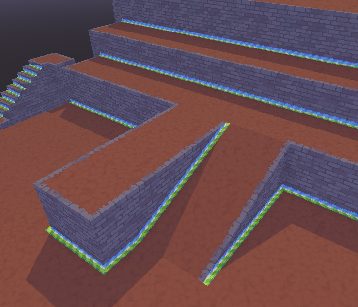
What you need to do is pretty much identical to the convex corners recipe:
- Start by following all the steps from the convex corners recipe
up until you have to paste in the code for the edge rule.
Use the following code instead,
replacing “DIRT” and “BRICK” with the
UPPER_SNAKE_CASE names of
your surfaces.
The only difference is the line of code involvingself.surface == DIRT and neighbor.surface == BRICK and angle < -40angle. Now,anglehas to be smaller than -40, which means that this rule will only apply to edges that are concave with an angle of at least 40°. - Reimport your 3D model. You should now see your new trims appear.
Coping: decorative stone edges
In architecture, decorative stone edges are called “coping”. They're easy to add and surprisingly versatile. You can use these to easily add tops to fences and facades. The church demo also uses coping for most of the stone decorations on the church.
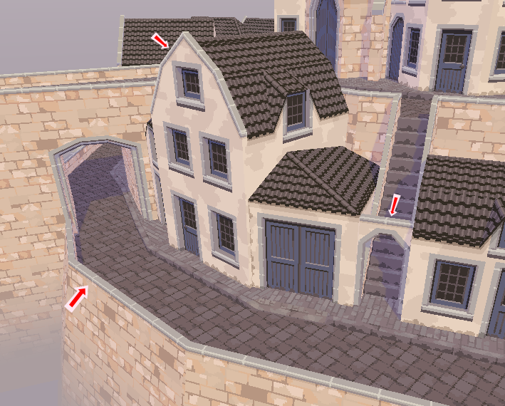
We'll be making one surface and one trim: The surface will be the top of the coping, and the trim will be its sides.
Here's how you do it:
- Start by adding a 3D model:
- Block in something that will use the coping, like a brick fence.
- Create a new material for the coping. I simply called it “coping”.
- Use the material in the model, for example adding it to the top of the brick fence.
- Reimport your 3D model in Godot. You should see your changes already, although you'll get a warning about AutoTrimmer not recognizing your “coping” material (yet!)
- Make a tiling texture for the top surface of the coping. If you want the coping to have lines like in the screenshot, create a texture with a vertical line every so many pixels (in the screenshot it's every 24 pixels, although that can only really work if your texture is a multiple of 24 pixels wide).
- Create a Godot material that uses your new texture.
- Add the coping surface.
- In your rulebook, create a new surface for the coping.
- Set its name to the same name as you used for the material in the 3D model. If you don't give it exactly the same name, AutoTrimmer won't recognize it! Capitalization also has to match.
- Set “replace with material” to the Godot material you made in the previous step.
- Set “UV unwrap mode” to “unwrap along length”. This will align the texture to the sides of the surface, which is exactly what we want for the coping.
- Put the texture you made into “texture size source”.
- Check the option “may mirror texture to line up”. This will help align the surface with its trims.
- Reimport the model and see if the top of your coping is looking good.
- Draw a trim for the side of the coping on your trimsheet. If you gave the coping a line, don't forget to add lines to the trim at the same distance.
- Configure the trim.
- Create a new trim.
- Give it a name. I called it “coping_side”.
- Give it the right texture.
- Enable the option “may mirror texture to line up”.
- Optionally, configure the trim's whitelist. I don't think it's really necessary.
- Lastly we'll add the edge rule.
- Create a new edge rule.
- Set “add trim at neighbor” to the name of your “coping_side” trim.
- Paste in the condition below. In the code, replace the word “COPING” with
the UPPER_SNAKE_CASE name
of your coping surface.
self.surface == COPING and neighbor.surface != COPING and angle > 10 - Now reimport your model and see how it looks!
Molding: decorations around windows and doors
The architectural term for decorations around the holes of windows and doors is “molding”. This molding recipe will make it super easy to add windows and doors to your buildings. It doesn't just work for square holes: In the church demo, this molding recipe is also used for all of the arched windows and doors. To make the church doors look more richly decorated, I added two moldings instead of just one.
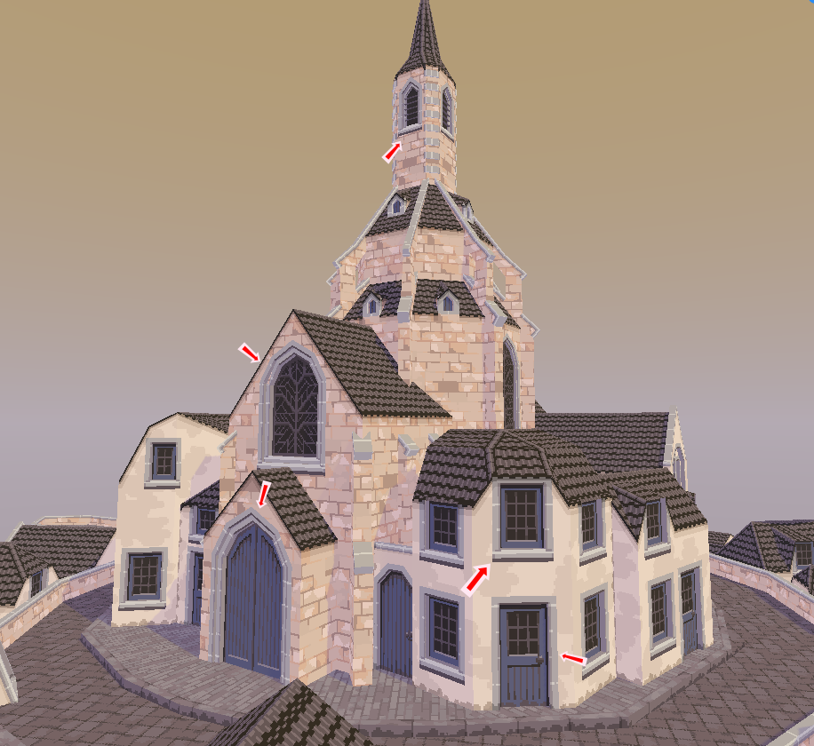
This recipe is pretty much the advanced version of the coping recipe. Instead of using just a single trim, we'll use three different trims. Which trim we will use depends on the direction that the side is facing. In the church demo, I've added a windowsill to the bottom trim and add a little hint of shadow to the top trim.
Here's how you do it:
- Start by making a 3D model that uses the molding material.
- Assuming you already have a 3D model, create a hole for a window or door, which will be decorated with the molding trim.
- In the 3D model, create a new material for the molding and assign it to the sides of the window's hole. You can call the material “molding”.
- Create a surface for the molding. This surface is going to be used for the
sides of the hole that the door or window sits in.
- Give the surface the same name as the name of the molding material in your 3D model. If you don't give it exactly the same name, AutoTrimmer won't recognize it. The capitalization must match exactly.
- Create a texture for the inner surface of the molding and apply it to the surface.
- Set the “UV unwrap mode” to either “Unwrap” or “Unwrap along length”.
- Set the texture size by putting an image into “texture size source” (if you don't have an image, you can type the size into “texture size pixels”)
- Now reimport the 3D model and see if your molding surface looks right.
- Now you'll need to add three different trims to your trimsheet. One trim for the top side, one for the bottom side, and a last trim for the left and right side.
- Add the three trims to the rulebook.
- Give them names, for example “molding_top”, “molding_side” and “molding_bottom”.
- Set their textures to the ones you made in the previous step.
- Optionally, configure their whitelists.
- Because we want our three trims to get corners between each other,
we'll need to put them in the same trim group.
Otherwise they would ignore each other!
- Create a new trim group, and add the three trims you just made.
- (Optional but recommended)
Depending on how your trims look, it may make things look a lot better if we
add some special textures for the trim corners.
- In the trimsheet, add a corner texture that connects the top side to the left/right side
- Add another corner texture connecting the bottom side to the left/right side.
- Note: We won't need any sawn-off corner textures, because you'd need to have some really crazy window shapes for sawn-off corners to show up.
- Now that we have our surface, trims and trim corners, we can add the edge
rules. We'll add three edge rules. For the first edge rule, we'll
add the “molding_top” trim.
- Create a new edge rule.
- Set “add trim at neighbor” to your “molding_top” trim.
- Paste the following code into the condition, adjusting “MOLDING” to the
appropriate UPPER_SNAKE_CASE
name for your surface.
self.surface == MOLDING and neighbor.surface != MOLDING and neighbor.dir.y > 0.8 and angle > 10
- Add the “molding_bottom” trim.
- Create a new edge rule.
- Set “add trim at neighbor” to your “molding_bottom” trim.
- Paste the following code into the condition,
once again adjusting “MOLDING” as necessary.
self.surface == MOLDING and neighbor.surface != MOLDING and neighbor.dir.y < -0.8 and angle > 10
- Lastly, we'll add the edge rule for the “molding_side” trim.
- Create a new edge rule.
- Ensure that the new edge rule appears behind the other two edge rules in the list! It's very important that this edge rule runs last, because it has the fewest restrictions of the three edge rules. If this edge rule were to run before the other two, it would take up all the edges where the other two trims should be added, and you wouldn't see the other two trims in the end result.
- Set “add trim at neighbor” to your “molding_side” trim.
- Paste in the following condition, adjusting “MOLDING”.
self.surface == MOLDING and neighbor.surface != MOLDING and angle > 10
- With the rules in place, reimport your 3D model and see if it works!
Roofs: rooftiles, ridges and eaves
Every building needs a roof of some kind. In this recipe, we'll be creating a roof surface that we'll decorate with two trims: One for the ridges (the sharp edges at the top of the roof) and one for the eaves (the outer sides of the roof).
This roof recipe lets you make normal straight roofs as well as roofs that are curved, like at the ends of the big roof in the screenshot below.
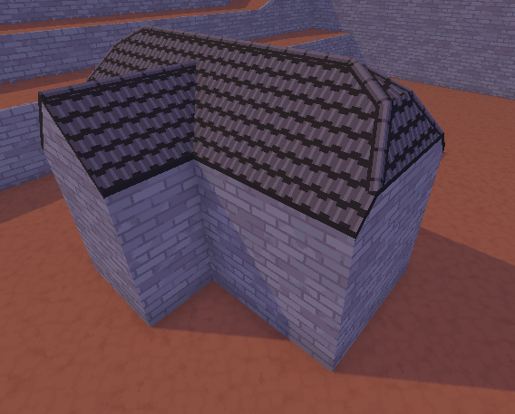
Here's how you can make a roof like this:
- Start by blocking in a house in your 3D model. For the roof, create a new material. I will simply be calling this material “roof”, but you can use whatever name suits you.
- Reimport the 3D model in Godot. You should see your changes appear. You should also see a warning in the “output” window about AutoTrimmer not recognizing your roof material. Let's fix that.
- First we'll need a rooftile texture. Because rooftiles are supposed to tile, it won't look unnatural if you make a small texture of just a single rooftile. That said, a big texture gives you the opportunity to add some color variation to your rooftiles if that's what you're looking for, although it's also more work. (Note that AutoTrimmer lets you overwrite small images with bigger images as long as you use “texture size source” for your surface instead of “texture size pixels”. That means that you can start with a small texture and replace it with a bigger texture later)
- Turn the rooftile texture into a Godot material. How you do this is up to you. You can either use a StandardMaterial3D or a ShaderMaterial.
- Add the roof surface to your rulebook.
- Add a new surface to your rulebook.
- Change its name to match the name of the material in your 3D model exactly. Capitalization also has to match!
- Put your Godot material into the “replace with material” option.
- Set “UV unwrap mode” to “unwrap”.
- Put your rooftile texture into “texture size source”.
- Enable the option “may mirror texture to line up” (otherwise it won't line up with the roof on the other side of the ridge)
- Reimport your 3D model. If the rooftiles are looking like they should, we can move on to the trims.
- Let's start on the trims. We're going to make two trims:
One trim is going to be the ridge (the sharp top edge of the roof),
the other trim is going to be used for the eave
(the lower edge of the roof).
- Add a texture for the ridge trim to your trimsheet.
- Add a texture for the eave trim to your trimsheet. I will be using a very simple two pixel wide black line for this. A nice idea is to add some half-transparent black lines underneath for fake shadows. I did that for the church demo.
- We'll need to add the trims to the rulebook next.
- Create two new trims. I will be calling them “ridge” and “eave”.
- Configure both trims to use the right texture.
- For the ridge trim, add the roof surface to the whitelist. This prevents the ends of its trim from extending a little bit onto walls when the angle difference is very shallow.
- For the ridge trim, enable the option “may mirror texture to line up” (otherwise it won't line up with the ridge on the other side of the edge)
- We'll need to add some edge rules so that the trims will show up on
the 3D model.
We'll start with an edge rule for the ridges.
- Create a new edge rule.
- Set both “add trim here” and “add trim at neighbor” to your ridge trim.
- Paste the following code into the condition.
Make sure to replace “ROOF” with the
UPPER_SNAKE_CASE
name of your roof surface.
(This condition uses changes in texture direction to see where we need to add ridges. Check the documentation on uv_dir if you'd like to know more. Furthermore, theself.surface == ROOF and neighbor.surface == ROOF and self.uv_dir !~= -neighbor.uv_dir and angle > 10!~=operator is the “not approximately equal” operator) - Reimport the mesh. Your ridges should show up now!
- Lastly we'll add the eaves.
- Create a new edge rule.
- Set “add trim at neighbor” to your eave trim.
- Paste the following code into the condition, again replacing “ROOF” with
the right name for your roof surface.
self.surface == ROOF and neighbor.surface != ROOF and angle > 10 - Reimport your 3D model. You should now have a pretty decent looking roof!
I've made a roof of black rooftiles here, but you can use the same steps for lots of different types of roofs. You can also add multiple variations of roofs to your project for some extra variety.
Optional: A trim for the concave corners
To me, the roof is already looking pretty good as it is, but in the screenshot up top you can see a UV seam where the small roof on the side meets the bigger roof. It doesn't really bother me, but if you want, we can cover it up with a thin line.
Notice the little black line in the concave corner of the roof.
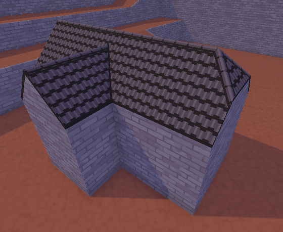
It's a small difference, but if you think it's worth your time, here's how you do it:
- Add a black line to your trim sheet (if you also did the eave as a black line, you can also reuse a one-pixel-tall part of that texture instead of making a new one).
- Add a trim for your black line.
- Give it a name. I called mine “roof_concave”.
- Configure the texture.
- Optionally give it a whitelist. I personally didn't find this necessary.
- Now let's add the edge rule.
- Set “add trim here” to your new trim.
- Paste in the following condition, again adjusting “ROOF” as needed:
self.surface == ROOF and neighbor.surface == ROOF and self.uv_dir !~= -neighbor.uv_dir and angle < -10 - Reimport your 3D model. You should now see a little trim on the concave corners of the roof.
Rulebook
In AutoTrimmer, all of the rules and settings are stored in (what I call) a “rulebook”. A rulebook contains absolutely everything that AutoTrimmer needs to know:
Besides those things, which each have their own separate pages in the documentation, a rulebook also has some general settings. Those general settings are explained on this page.
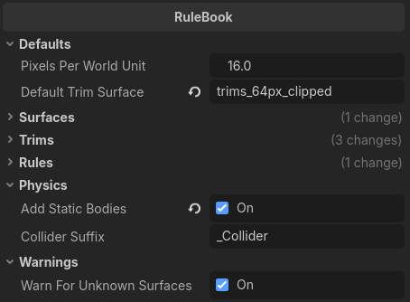
Defaults
Pixels per world unit (optional but highly recommended)
For the textures, how many pixels wide is a world unit? In Godot, this is essentially pixels per meter.
Pixels per world unit is used to calculate how big your textures and trims are in the world. For example, if you have a trim that's 8 pixels tall on the texture, and "pixels per world unit" is set to 16, the generated trim will be 0.5 world units tall (so half the width of a grid square).*
World unit explained: The term “world unit” refers to the width of one square in the world's coordinate grid. In Godot and most other 3D software, a world unit is a meter by convention. The exception is Unreal Engine, where a world unit is a centimeter by convention. That being said, a world unit doesn't have to correspond to a real-world size. It can be as big or as small as you want it to be.
Below, you can see 16 pixels per world unit on the left, and 8 pixels per world unit on the right.
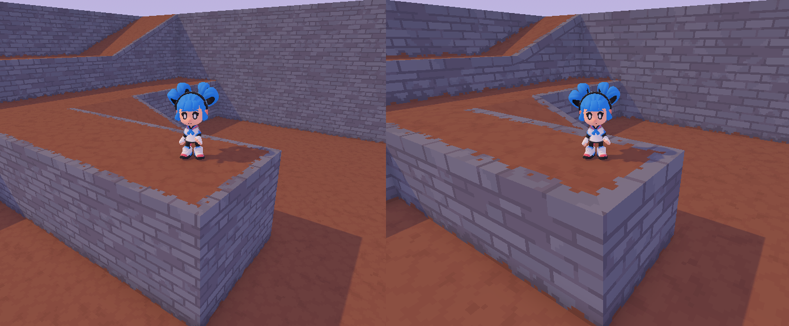
Default trim surface (optional but highly recommended)
The surface that will be used for all trims, unless the trim config specifies a surface override.
When using AutoTrimmer you'll probably find yourself using one trim sheet for almost all of your trims. Once you've set up your surfaces, you can fill in the name of the default trim surface here. All of your trims will use this surface unless you explicitly set them to use another one. This helps to make things a little more convenient.
The name in “default trim surface” must exactly match the Name of the surface.
Surface names are sensitive to capitals and spaces. For example, if your surface is called “brick” and you fill in “Brick” for this option, you'll get an error, because of the mismatch in the capital letter B.
Physics
Add static bodies
Automatically add physics nodes upon importing the 3D model.
In a game engine, a 3D model is just for looks. It's not a real landscape, just a fake, paperthin facimile of a landscape that doesn't do anything by itself. By default characters and objects will fall straight through it.
If you want characters to be able to walk on your models instead of falling straight through it, you don't just need the 3D model, you also need physics bodies. Physics bodies are used by the physics engine to simulate things like gravity and collisions.
For Godot, AutoTrimmer can automatically generate StaticBody3D nodes for you. A StaticBody3D is a physics body that never moves. It's the best choice for fixed (not moving) level geometry.
However, it's not a good choice for things like doors, which are supposed to move. If you're making levels with AutoTrimmer and you want to add doors and other interactive objects, it's better to add those in the game engine rather than trying to do it with AutoTrimmer.
AutoTrimmer will generate StaticBody3D nodes with a ConcavePolygonShape3D. This is the least efficient physics shape, but it can handle the greatest variety of shapes. As long as your 3D models are low poly, physics performance should stay pretty good.
Collider suffix
This suffix signifies that a mesh is a custom collision shape.
If you've made a staircase, it can happen that your character gets stuck on every step. One way to handle this is to make a more complex character controller that's built to handle things like stair steps properly. A much easier solution is to make the stairs act as if they're a ramp. Of course, we still want them to look like a staircase, but for physics, they should act like a ramp. We can do this by using one mesh for the graphics and another mesh for the physics.
By default, if “add static bodies” is enabled, you can add a mesh whose name ends with “_Collider” to the scene in Blender. Parent it to the mesh whose physics mesh you want it to replace. AutoTrimmer will then use the “_Collider” mesh for the physics body of the parent node. The “_Collider” mesh itself won't be visible.
You can use this option to change “_Collider” to something else if you want. If “add static bodies” is disabled, all “_Collider” meshes are ignored (they still won't be added to the graphics).
Warnings
Warn for unknown surfaces
Disables warnings for unrecognized materials in the 3D model.
When AutoTrimmer comes across a material in your 3D models that it doesn't recognize (it isn't mentioned in the surface list), you'll get a warning. This is because an unrecognized material might be a mistake. Maybe you gave it the wrong name in the 3D model?
However, AutoTrimmer can actually deal with unrecognized materials just fine. You only get a warning to make sure you didn't make a mistake. When a material is unrecognized, it will just leave those parts of the mesh exactly as they were, maybe adding trims onto it if any rules apply.
If you're getting warnings for unrecognized materials and you know it's harmless, there's two things you can do to get rid of the warnings:
- Add the material names to your list of surfaces. AutoTrimmer doesn't do anything to a surface unless you tell it to, so even if you want to leave a material's surface unchanged, you can still add it to the list.
- Disable this option. That way you won't have to add the surfaces to the list, and you won't get spammed with warnings. You also won't get a warning when you make a mistake, however.
Surface configuration
A mesh is split into multiple surfaces based on its materials. Each surface of the mesh has exactly one material. For example, for a 3D model of a house, one surface would probably be its walls, another its roofs, and yet another the windows.
Below you can see a 3D model with two surfaces: A grey brick surface and a dirt surface.
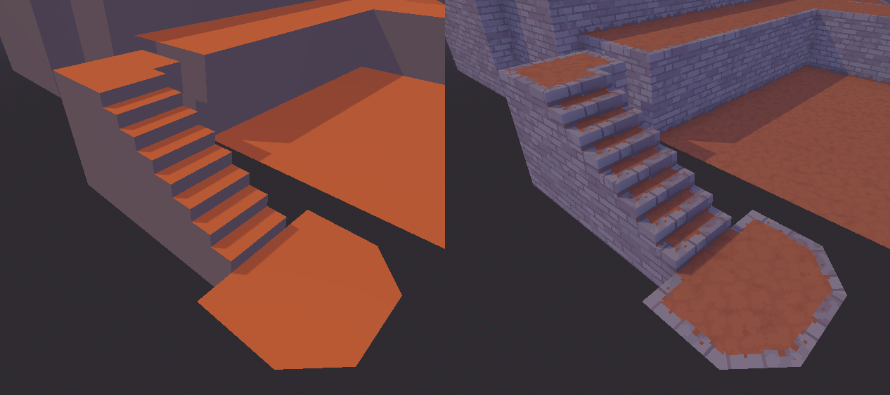
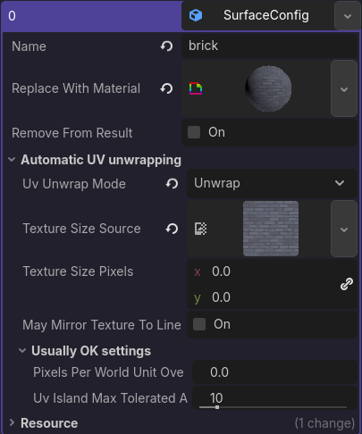
General settings
Name
The name is used to refer to the surface in the rulebook and must match the name of the material in the 3D model.
The name of a surface is very important. It must match the name of the material in the input 3D model exactly, or else AutoTrimmer won't recognize the surface and things won't work at all.
A surface does not need to appear in the input 3D model. For example, trim surfaces usually do not appear in the input at all and are only added while AutoTrimmer processes the model.
You cannot have two surfaces with the same name.
You also can't
have two surfaces that have the same name in UPPERCASE_SNAKE_CASE.
More details about UPPER_SNAKE_CASE are in the
edge rules documentation.
Surface names are sensitive to capitals and spaces. If the surface name in the configuration is "brick" and your material is called "Brick" in Blender, it won't be matched together because of the capital letter B.
Replace with material (optional)
Which material your surface should use after AutoTrimmer is done with it.
If you leave this option blank, this surface will use whichever material Godot would use by default. I generally recommend filling in this option, because it makes it easy to reuse a rulebook for multiple 3D model files.
Materials explained: In 3D models, a material primarily determines the color of a surface (if we get into fancy technical art, materials can also affect other things, but it's usually mainly about colors). For example, a material might make a surface red, or give it an image texture, or give it an animated image texture (like maybe for water). Materials also determine how a surface is affected by light, but that's actually also a color thing (how dark or bright the color is).
Remove from result
When enabled, this surface won't appear in the processed 3D model.
You probably won't need this option very often, but it's useful for a couple of tricks. (Author's note: I might add some recipes that use this to the recipes book in the future, but right now you're going to have to use your own creativity)
In the image below, the dirt surface has been removed from the end result. Notice how the trims are still there, though!
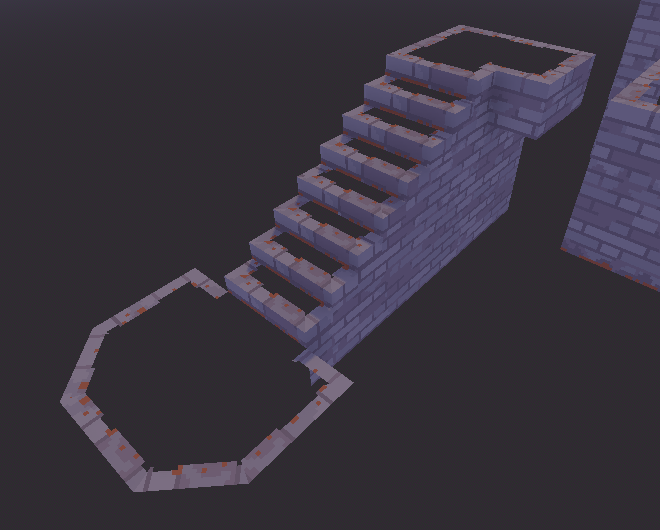
Automatic UV unwrapping
UV Unwrap Mode
Whether AutoTrimmer should automatically give texture coordinates to this surface, and how it should do it.
AutoTrimmer can automatically unwrap the UVs of a surface for you.
UV unwrapping explained: To draw textures onto your 3D model, the computer needs to know which parts of the texture go where. This is determined by UV coordinates. Each corner of a face is given a coordinate on the texture, and the computer will then fill in the face with the part of the texture that's between those coordinates. UV unwrapping is the process of giving each corner a coordinate on the texture. It's called “unwrapping” because when you're doing it by hand, it's kind of like you're unfolding the 3D model to lay it flat.
These are the possible UV unwrap modes:
- Do not change UVs: Keeps the UVs as they were in your 3D modelling app.
- Unwrap: This is a fairly basic UV unwrap that's good for most tiling textures. This doesn't stretch the texture at all and tries to align the texture so that the texture's Y axis matches Godot's Y axis (so up stays up). You might get ugly texture seams between faces that face different directions.
- Unwrap along length: This unwrap mode is useful for surfaces that are usually thin, and which need to have the texture going along its length. It rotates the texture for each face so that the texture's X axis is aligned with the longest side of the face (at least that's the gist of it). This works quite well for thin surfaces. For other shapes you may get a lot of texture seams, but it can sometimes still give a nice result.
Texture size source (technically optional but highly recommended)
Set the texture size of a surface based on the size of an image.
AutoTrimmer uses the texture size to determine how big the UV coordinates should be in the world. For example, if you have a texture that's 64 by 64 pixels and the setting “pixels per world unit” is 16, the texture will be four world units large.
If your surface's material uses an image, you should put that image in here. The size of that image will be used as the texture size. It's more convenient than filling out “texture size pixels”, and it comes with the advantage that you can overwrite the image later with an image of a different size without needing to adjust the configuration.
I generally recommend that you fill this in whenever the surface's material uses a texture.
Texture size pixels (optional)
Set the texture size of a surface manually, for if you don't have an image.
AutoTrimmer uses the texture size to determine how big the UV coordinates should be in the world. For example, if you have a texture that's 64 by 64 pixels and the setting “pixels per world unit” is 16, the texture will be four world units large.
The setting “texture size pixels” is an alternative to the setting “texture size source”. If you don't have an image that you can use for “texture size source”, you can type the size of the texture into here.
By default, this is 0 by 0 pixels, which is a special value and is treated like leaving it blank.
May mirror texture to line up
When enabled, the texture will be mirrored approximately half the time so that the surface texture is aligned with the same surface going in the opposite direction.
For textures like rooftiles, you generally want the grooves and lines of the texture to line up exactly, even when the surfaces are facing the opposite direction. By enabling this setting, the texture will basically be mirrored when that helps it line up the grooves and lines.
There's no picture here, but the trim option “may mirror texture to line up” does have an image that may help explain the concept more clearly.
Pixels per world unit override (optional)
If you want a separate “pixels per world unit” value for this specific surface, you can fill it in here.
However, I don't recommend using different pixel densities in the same project, because it looks nicer when it's consistent. It can be good for background elements like far-away skyscrapers, though.
By default, this is 0 by 0 pixels, which is a special value and is treated like leaving it blank.
UV island max angle tolerance
Group together faces with similar directions so that they do not have UV seams between them.
AutoTrimmer will group together faces with a very similar orientation into texture islands. This is necessary because the quads that 3D artists make are often not quite flat, and so they would likely get an ugly texture seam in the middle if we didn't group them into one texture island.
This setting configures how much the angles of a texture island are allowed to differ. A higher tolerance leads to more faces getting grouped together.
Trim configuration
A trim is an edge decoration. It's what AutoTrimmer is named after, and the most important part of a rulebook. In the trim configuration, you specify how the trim looks, and in the edge rules, you specify on which edges trims should be placed.
The most important part of this configuration is the part where you define the texture of the trim. Besides those, there are also a lot of settings about how the trim is generated (like at which angle the ends of a trim should be) — you only sometimes need to touch these settings.
To help you find the settings that are actually important, settings that you usually do not need to touch are hidden away in groups marked with “usually OK”.
In the image below you can see edges with no trims, a trim on only one side, and a trim on both sides of the edge.
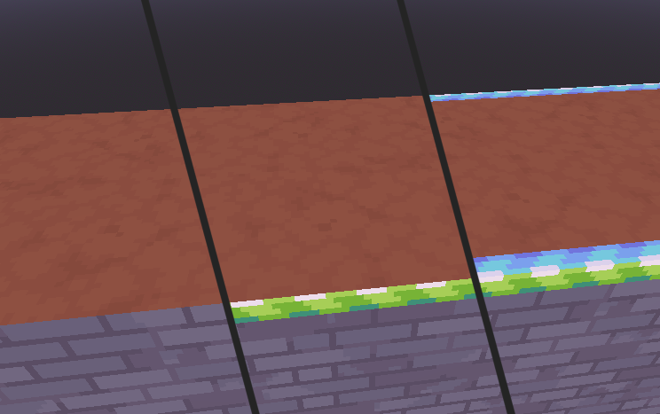
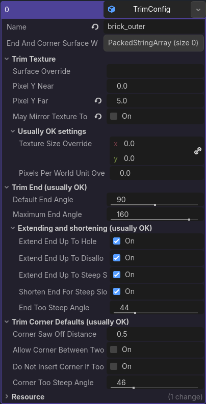
Name
The name of a trim is used in the configuration of trim corners, trim groups and edge rules.
You can't have two trims with the same name.
End and corner surface whitelist (optional)
Prevents ends and corners from showing up on unintended surfaces.
You probably don't want the ridge of a roof to extend slightly onto the walls. However, if you don't forbid it and the angle between the roof and the wall is small, AutoTrimmer will extend the ridge trim onto the wall.
The surface whitelist determines on which surfaces this trim's ends and corners may be placed. When this list is not empty, corners and ends of this trim will only appear on the mentioned surfaces.
By default this is empty, which means that corners and ends will be placed on any surface.
Surface names are sensitive to capitals and spaces. For example, if your surface is called “brick” and you fill in “Brick” for this option, you'll get an error, because of the mismatch in the capital letter B.
In the image below, on the left side the green trim uses no whitelist, and on the right side it has a whitelist that only allows corners on dirt surfaces.
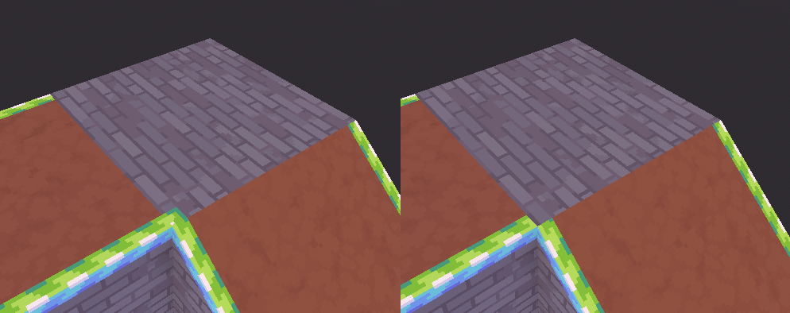
Trim texture
Surface override (optional)
If you don't want to use the default trim surface for this trim, you can write the name of the surface that you want to use here.
Pixel Y Near
A trim has a top and a bottom end. The setting “y near” is the y-coordinate of the end that's closest to the edge that's being decorated.
Trims must be laid out horizontally on the trim sheet. Vertical trim sheets are not supported.
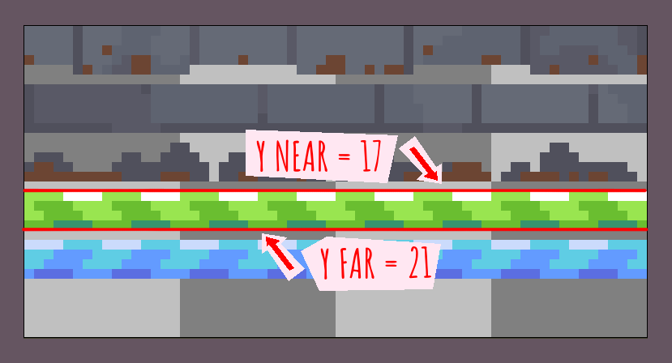
In Aseprite, you can find the coordinate of the pixel that your cursor is hovering over in the bottom-left corner. The y-coordinate is the second of these two numbers. Other art software may or may not have similar functionality — often they don't, but it doesn't hurt to look it up.
Pixel Y Far
A trim has a top and a bottom end. This is the y-coordinate of the end that's furthest from the edge that's being decorated.
More documentation at “pixel y near”
May mirror texture to line up
When enabled, this trim will line up with itself when it appears on both sides of the edge.
This is exactly like “may mirror texture to line up” in the surface configuration.
Here's a more technical explanation: This setting makes the U-axis (horizontal axis) of the UV coordinates point in a more consistent direction in world space.
On the left, this setting is enabled. On the right it's disabled. Notice how none of the lines on the roof's ridge are aligned in the picture on the right. They're all one pixel off.
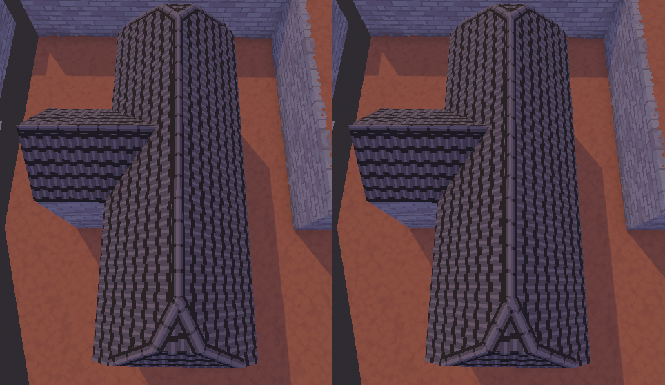
Texture size override (optional)
By default, a trim will derive its texture size from its surface. This “just works” in almost all situations, but if this somehow doesn't work for you, you can specify a different texture size here.
Pixels per world unit override (optional)
When you want a separate “pixels per world unit” value for this specific trim, you can fill it in here.
However, I don't recommend using different pixel densities in the same project, because it looks nicer when it's consistent. It can be good for background elements like far-away skyscrapers, though.
By default, this is 0 by 0 pixels, which is a special value and is treated like leaving it blank.
Trim end
Default end angle
By default, AutoTrimmer tries to make trims end that are at a 90° angle if it can. You can adjust that to a different angle here, although 90° is almost always the best choice.
Maximum end angle
The end of a trim may be extended beyond the default angle (90°) for a number of reasons (see the “extend” settings below). Here you can configure the maximum angle that a trim end can be extended to. I generally recommend leaving this setting at its default.
Extend end up to hole
When enabled, the trim end will be extended when there's a face with no neighbor ahead. Basically, this setting makes trim ends go up to the outermost edges of the mesh.
Extend end up to disallowed surface
If this trim has a whitelist, any face that's not on the whitelist is considered a disallowed surface. This setting makes the ends of trims connect all the way up to the disallowed surface, which generally looks better.
Extend end up to steep slope
If there's a steep slope that's further away than the default angle, this setting makes the trim end extend all the way up to the steep slope.
A steep slope is a face that's pretty steep relative to the face of the trim. Any angle greater than the “end too steep angle” is considered “pretty steep”.
Shorten end for steep slope
If there's a steep slope that's closer than the default angle, this setting makes the trim end shorter so that it doesn't go past the steep slope.
A steep slope is a face that's pretty steep relative to the trim's face. Any angle greater than the “end too steep angle” is considered “pretty steep”.
End too steep angle
This determines when a slope is “too steep” for a trim end, which affects the settings “extend end up to steep slope” and “shorten end for steep slope”.
Trim corner defaults
Corner saw-off distance
Set a maximum length for this trim corner.
When a trim corner is very sharp, it can get very long. As a matter of fact, it can basically get infinitely long. Infinitely long corners do not look very good, and because of that, we may have to saw off the tip of a corner.
This setting determines the distance at which the tip of the corner is sawn off. This should generally be approximately two or three times the width of the trim.
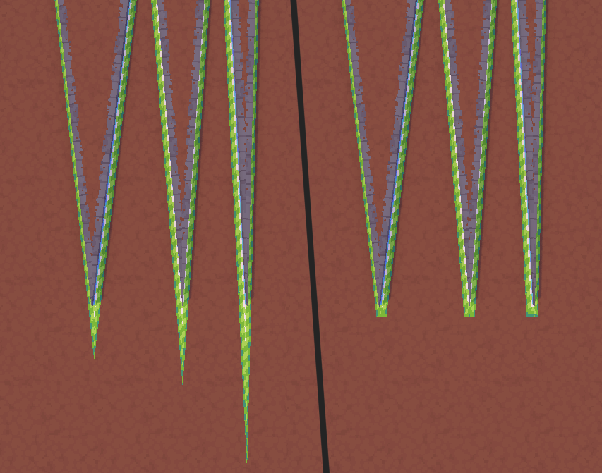
Allow corner between two edges of the same trim
By default, AutoTrimmer won't generate corners between two trims that are both connected to the same edge. Sometimes, you might want this. For example, if the trims represent a wooden beam on an outer edge of a building, it can be nice to have a cap at the ends of the beam.
Do not insert corner if too steep
A corner connects two trims and both of those trims have one main face. If this option is enabled and the two main faces of the trims are too steep relative to each other, no corner will be inserted. See “corner too steep angle”.
This also doesn't insert a corner if any face that the corner would go on top of is too steep.
Corner too steep angle
This determines when a slope is “too steep” for a trim corner, which affects the setting “do not insert corner if too steep”.
Trim corner configuration
Sometimes the trim corners that are generated by default just aren't good enough. If you want to use a custom texture for a trim corner, you'll need to add a trim corner configuration.
In my experience, special image corners aren't really necessary for most trims. Sometimes, though, they're absolutely crucial for good-looking corners.
Below you can see the default corners between trims in the top half, and in the bottom half you can see an example of trim corner images.
Here's a couple of things I'd like you to observe in the image:
- Notice how the sawn-off corners on the right use a different image than the normal corners on the left.
- Notice how only the convex corners (sort-of sharp corners) get an image. Adding images onto concave corners is not supported.
- Notice how the textures get warped for some of the corners: The texture gets stretched and squished to make it fit the geometry.
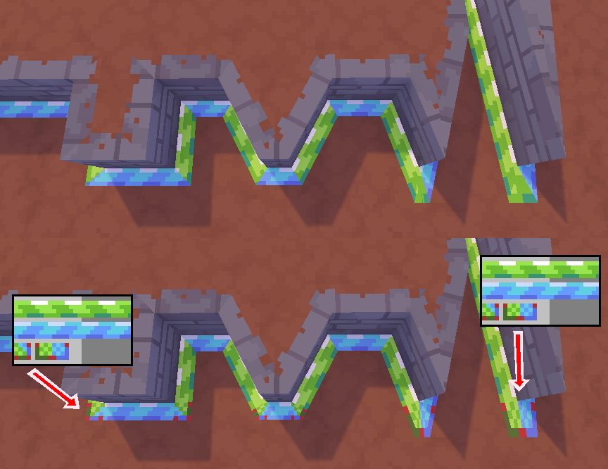
Trims only interact with trims that are in the same trim group and ignore all trims that aren't in their trim group. Before creating a trim corner configuration, make sure that its trims are in the same trim group.
To help you find the settings that are actually important, settings that you usually do not need to touch are hidden away in groups marked with “usually OK”.
Sawn-off sharp corners can be given an image texture, but they're usually pretty rare. I would generally say that it's not worth your time.
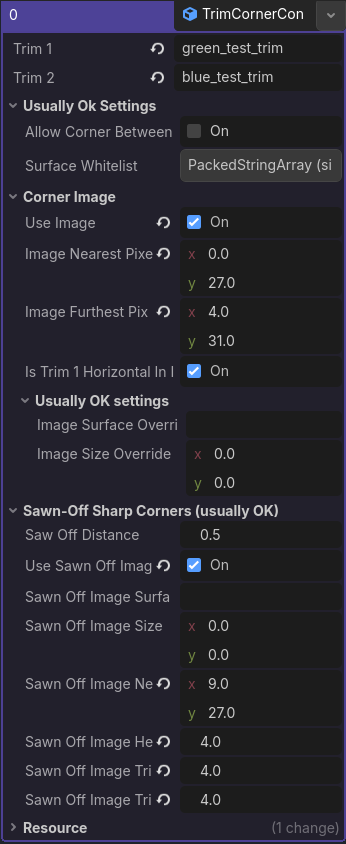
General settings
Trim 1
The corner's first trim.
This is the first trim of the corner. In the corner image, the first trim generally goes towards the left side of the image.
Trim names are sensitive to capitals and spaces. For example, if your trim is called “brick_trim” and you fill in “Brick_trim” for this option, you'll get an error, because of the mismatch in the capital letter B.
Trim 2
The corner's second trim.
This is the second trim of the corner. In the corner image, the second trim generally goes upwards.
It's worth noting that this is allowed to be the same trim as trim 1.
Trim names are sensitive to capitals and spaces. For example, if your trim is called “brick_trim” and you fill in “Brick_trim” for this option, you'll get an error, because of the mismatch in the capital letter B.
Allow corner between two sides of the same edge
By default, AutoTrimmer won't generate corners between two trims that are both connected to the same edge. Sometimes, you might want this. For example, if the trims represent a wooden beam on an outer edge of a building, it can be nice to have a cap at the ends of the beam.
Surface whitelist (optional)
This prevents the corner from crossing through surfaces that you don't want it to go through.
You only rarely need this.
Surface names are sensitive to capitals and spaces. For example, if your surface is called “brick” and you fill in “Brick” for this option, you'll get an error, because of the mismatch in the capital letter B.
Corner image
Use image
When enabled, convex corners (sharp corners) will be decorated with a corner image.
Image nearest pixel (required for corner image)
The texture coordinate closest to the corner vertex.
This is the pixel coordinate of the image's corner that's closest to the vertex of the corner.
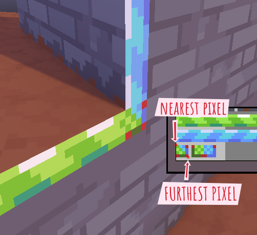
In Aseprite, you can find the coordinate of the pixel your cursor is hovering over in the bottom-left corner.
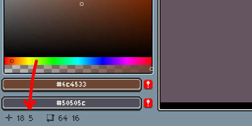
Image furthest pixel (required for corner image)
The texture coordinate furthest away from the corner vertex.
This is the pixel coordinate of the image's corner that's furthest away from the vertex of the corner.
Is trim 1 horizontal in image
Whether the first trim is horizontal or vertical.
If enabled, trim 1 is either on the left or on the right side of the image. Otherwise, it's either above or below the image. When enabled, whether it's on the left or on the right is determined by the nearest and furthest coordinate.
Image surface override (optional)
If you don't want to use the default trim surface for this corner image, you can fill in the name of the surface you want to use here.
Surface names are sensitive to capitals and spaces. For example, if your surface is called “brick” and you fill in “Brick” for this option, you'll get an error, because of the mismatch in the capital letter B.
Image size override (optional)
By default, a corner image will derive its texture size from its surface. This “just works” in almost all situations, but if this somehow doesn't work for you, you can specify a different texture size here.
Sawn-off sharp corners
Saw-off distance
Set a maximum length for this trim corner.
When a trim corner is very sharp, it can get very long. As a matter of fact, it can basically get infinitely long. Infinitely long corners do not look very good, and because of that, we may have to saw off the tip of a corner.
This setting determines the distance at which the tip of the corner is sawn off. This should generally be approximately two or three times the width of the trim.
Use sawn-off image
When enabled, sawn-off corners will be decorated with an image.
This is only rarely worth your while, because sawn of corners are usually not very common.
Sawn-off image surface override (optional)
If you don't want to use the default trim surface for this sawn-off corner, you can fill in the name of the surface you want to use here.
Surface names are sensitive to capitals and spaces. For example, if your surface is called “brick” and you fill in “Brick” for this option, you'll get an error, because of the mismatch in the capital letter B.
Sawn-off image size override (optional)
By default, a sawn-off corner image will derive its texture size from its surface. This “just works” in almost all situations, but if this somehow doesn't work for you, you can specify a different texture size here.
Sawn-off image nearest pixel (required for sawn-off corner image)
The coordinate of the pixel that's closest to the original vertex of the sawn-off corner. Specifically, we need the pixel for which the top-left corner of the pixel is at the original vertex.
Sawn-off image height pixels (required for sawn-off corner image)
This specifies the height of the sawn-off corner image (in pixels).
Sawn-off image trim 1 width pixels (required for sawn-off corner image)
In the sawn-off image, how many pixels to the left of the nearest pixel is the top of trim 1?
Sawn-off image trim 2 width pixels (required for sawn-off corner image)
In the sawn-off image, how many pixels to the right of the nearest pixel is the top of trim 1?
Trim group configuration
A trim group is a list of trims which can get corners between each other. If two trims aren't in the same trim group, they will ignore each other and simply overlap if they end at the same vertex.
A trim can be in one or zero trim groups. When a trim is not in a trim group it will ignore all other trims. The trim will still get corners with itself, even if it is not in a trim group.
The order of trim groups matters: If two trims from different trim groups overlap, trim groups that appear later in the list are drawn on top of groups that appear earlier.
Trim names are sensitive to capitals and spaces. For example, if your trim is called “brick_trim” and you fill in “Brick_trim” instead, you'll get an error, because of the mismatch in the capital letter B.
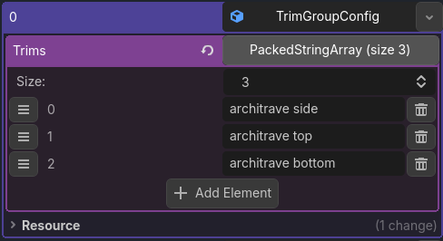
Edge rules
Edge rules determine where trims are added onto a 3D model. Without edge rules, your model will not get any trims added onto it.
An edge rule specifies when trims get added and which trims get added. The complicated part of this is specifying when trims get added, the “condition”. The condition consists of a bit of code that says exactly when trims should get added.
Despite needing some code, you generally don't need to be a computer whiz to create edge rules. You can just paste in some code from the recipes and adjust the surface names to your situation, and that should be good enough for a lot of situations.
An in-depth understanding of the code for edge rule conditions is not necessary. They're pretty short, and you can make do with a shallow understanding.
An edge rule is evaluated once for every edge of every face. Edge rules are evaluated in-order, with the ones appearing first on the list being evaluated first.
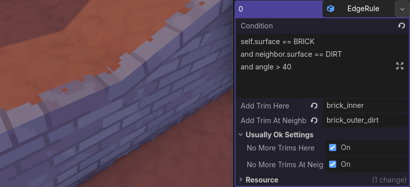
General settings
Condition
Code that determines when the trims should be added to an edge.
This snippet of code determines when the trims should be added. It's too much to explain here, so there's a whole section for it. Take a look at the condition section.
Add trim here (optional)
Which trim to add to the first side of the edge.
This determines which trim gets added to the current face if the condition passes (the “self” face in the condition).
Trim names are sensitive to capitals and spaces. For example, if your trim is called “brick_trim” and you fill in “Brick_trim” instead, you'll get an error, because of the mismatch in the capital letter B.
Add trim at neighbor (optional)
Which trim to add to the second side of the edge.
This determines which trim gets added to the neighboring face if the condition passes (the “neighbor” face in the condition). If the current face does not have a neighbor, this is ignored.
Trim names are sensitive to capitals and spaces. For example, if your trim is called “brick_trim” and you fill in “Brick_trim” instead, you'll get an error, because of the mismatch in the capital letter B.
No more trims here
Whether anymore trims should be added to the first side of the edge.
When the condition passes and this setting is enabled,
no more edge rules will be evaluated for this edge from the current face.
By that I mean: For the edge that passed the condition,
the current face will never appear as self anymore.
It can still appear as neighbor unless
“no more trims at neighbor” is also checked.
Because edge rules are evaluated in-order, this option only affects edge rules that come after the current edge rule in the list.
Unless you're specifically in a situation where you want to have multiple trims that attach to this edge, you should leave this enabled.
No more trims at neighbor
Whether anymore trims should be added to the second side of the edge.
This is mostly the same as “no more trims here”,
except that it prevents the neighboring face from appearing as self
(instead of the current face).
If this is enabled and “no more trims here” is disabled,
the neighboring face can still appear as neighbor, but never as self.
If an edge rule can apply to both a face and its neighbor, then I really can't tell you which of the two faces will have the edge rule evaluated first and which one would be blocked by “no more trims at neighbor”. It depends on the 3D model and in what order the model's internal data is stored. In practice that means it's basically random.
Condition code
An edge rule uses a snippet of code to check when its trims should be applied.
For its conditions, AutoTrimmer uses a tiny scripting language that resembles Python and GDScript. It only supports expressions (the kind of code that you can put in an if-statement) — you can't create new variables or functions.
Below is an example. The self trim is green and the neighbor trim is blue.
Notice how only the sort-of-sharp edges are given a trim by this edge rule.
That's because concave corners (like the corners at the bottom of the walls)
have a negative angle in AutoTrimmer.
This rule only applies to edges with an angle greater
than 40° — which excludes all negative angles.
self.surface == BRICK # The current face is brick...
and neighbor.surface != BRICK # And the neighboring face is not brick...
and angle > 40 # And the angle between the two faces is greater than 40 degrees
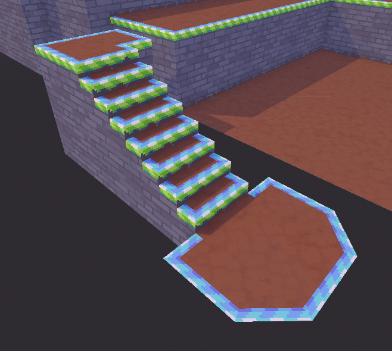
Approximately equals
Although the scripting language strongly resembles Python & GDScript,
there is one feature that those languages don't have:
AutoTrimmer has the operator ~=, which means “approximately equals”.
This operator is useful because software like Blender is not completely exact,
so checking whether two coordinates or two directions are exactly equal will
often not work the way you would like it to.
The ~= operator is True if its two operands are almost exactly the same.
The amount of error that it tolerates is really very small.
It's a substitute for the == operator for situations where the operands can
be very slightly wrong, due to precision problems.
There's also the “not approximately equal” operator !~=.
It gives the opposite of what ~= would give.
Surface constants
In code, each surface is referred to by a constant number. That constant number is given a name that you can use to refer to the surface in code. For example, here's a rule that finds all edges between a brick surface and a dirt surface:
self.surface == BRICK and neighbor.surface == DIRT
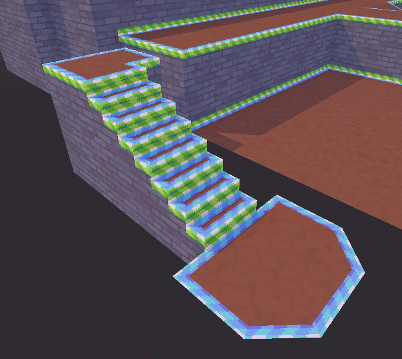
In code, the name of the surface is the same as its normal name, but in UPPER_SNAKE_CASE. If you keep the capitalization of your surface names somewhat normal, the upper snake case name will probably match your intuition.
Here's some examples of how names are turned into upper snake case:
| Surface name | UPPER_SNAKE_CASE_NAME |
|---|---|
| brick | BRICK |
| Brick | BRICK |
| BRICK | BRICK |
| grey brick | GREY_BRICK |
| GreyBrick | GREY_BRICK |
| grey_brick | GREY_BRICK |
| Grey_Brick | GREY_BRICK |
| GREY_BRICK | GREY_BRICK |
| greybrick | GREYBRICK |
| dvd player grey | DVD_PLAYER_GREY |
| DVD_PLAYER_GREY | DVD_PLAYER_GREY |
However! If you use mix different types of capitalization it doesn't work so well:
| Surface name | UPPER_SNAKE_CASE_NAME |
|---|---|
| DVD player grey | D_V_D_PLAYER_GREY |
| DVDPlayerGrey | D_V_D_PLAYER_GREY |
| DVDplayergrey | D_V_DPLAYERGREY |
| grey_BRICK | GREY_B_R_I_C_K |
| GREy_BRICK | G_R_EY_B_R_I_C_K |
| GrEyBrIcK | GR_EY_BR_IC_K |
Try to stick to one type of capitalization (and don't capitalize it in a weird way).
Overview of variables
This is the list of variables that you can directly use in an edge rule.
The variables self and neighbor have useful properties inside, which are
documented in the Face section.
| Name | Type | Short description |
|---|---|---|
| self | Face | The current face. |
| neighbor | Face? | The neighboring face, if it exists. |
| angle | number? | The angle between the current face and its neighbor, if there is a neighbor. |
| has_neighbor | boolean | True when self has a neighboring face. |
self
The global variable self gives you the current Face.
neighbor
The global variable neighbor gives you the neighboring Face.
If there is no neighbor, but neighbor is necessary to compute
your condition, then that counts as the condition not passing.
Examples
This condition will pass for the edges that are between a brick face and a
dirt face. This condition will not pass for faces with no neighbor, because
neighbor is necessary to compute the rule.
self.surface == BRICK and neighbor.surface == DIRT
This condition will pass for the edges that are inbetween a brick face and any
face that isn't brick. This condition will not pass for faces with no
neighbor, because neighbor is necessary to compute the rule.
self.surface == BRICK and neighbor.surface != BRICK
This condition will pass for the edges where there either is no neighbor, or where the neighboring face isn't a brick surface.
self.surface == BRICK and (not has_neighbor or neighbor.surface != BRICK)
It's a little complicated, but here's why this works when there's no neighbor, even though it uses the variable "neighbor":
In the expression "A or B", the part "B" is not looked at when "A" is True. It isn't necessary to look at "B", because "True or ???" is always going to be "True" in the end. After all, the result of "True or True" is "True", and the result of "True or False" is also "True".
This edge rule still works if there is no neighbor, because the part that uses "neighbor" is only looked at if there is a neighbor. The rule first checks if a neighbor exists before using the variable "neighbor".
Something similar applies to "A and B": An expression like "False and ???" is always going to give the result "False", so in the case of "A and B", it won't look at "B" if "A" is "False".
The example on the right is using the code from this last example. Notice how the bottom edge of the slope also gets decorated, even though the face does not have a neighbor there.
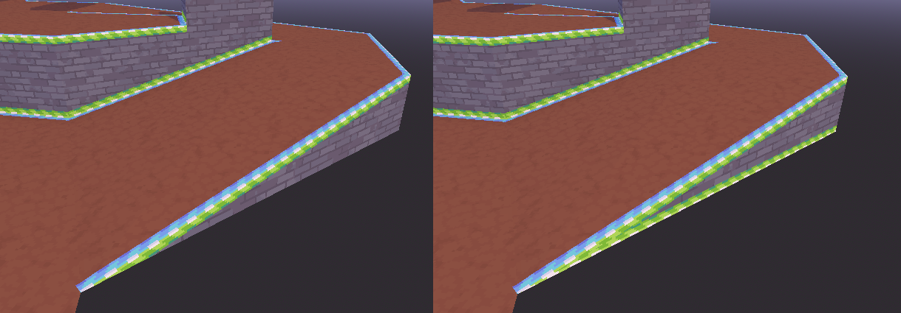
angle
The global variable angle gives you the angle between self and neighbor
in degrees. The variable angle is always between -180° and 180°
| Angle | Short description |
|---|---|
| 0 | self and neighbor are completely flat. They face the exact same direction. |
| 90 | This is a convex right angle, like an edge of a cube. It's kind of pointy. |
| -90 | This is a concave right angle, like a corner of a room. It's the kind of corner where dust builds up if you don't clean your stuff properly. |
Because 3D editing software is not perfectly exact,
you should not use exact equality.
You should be pretty approximate when checking angles.
For example instead of angle == 45 (to see if the angle is 45°),
you might want to use 40 < angle and angle < 50, which adds 5° of leeway in
both directions.
If there is no neighbor and angle is necessary to compute
your condition, then the edge rule fails.
Please note that this happens only if angle is
necessary in the calculation.
This is discussed in more detail in the last example of
Examples:
This edge rule will only succeed for faces that…
- … have a neighbor (implicit, because it uses "angle"), and…
- … have an angle to their neighbor that is greater than 30 degrees.
self.surface == DIRT and angle > 30
Notice how this rule adds a trim at the top of the ramp, but not at the bottom of the ramp: This is because the angle at the top of the ramp is 35°, and the angle at the bottom of the ramp is -35° (note the minus!)
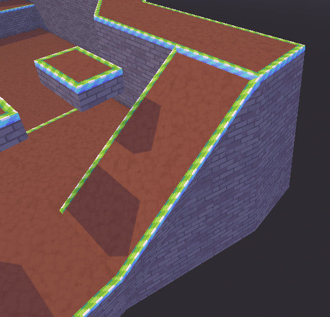
In the next code snippet, the second line of code is True if either…
- … this face has no neighbor, or…
- … the angle is not very steep (between 40 and -40 degrees).
self.surface == BRICK
and (not has_neighbor or (-40 < angle and angle < 40))
Notice how only the flat edges get a trim added between them, and the sides of the diagonal brick wall do not get trims. For this example it's important to understand that Godot turns all faces into triangles before they get to AutoTrimmer. That's why all of the faces are triangles.
Overview of global functions
These functions are available for use in edge rules.
Author's note: Only abs(number) has been useful to me so far.
The rest of these functions haven't been useful at all,
but they're there if you need them.
| Function | Result | Short description |
|---|---|---|
| abs(number) | number | In mathematics, the absolute turns negative numbers into positive numbers. Positive numbers stay the same. |
| abs(vector) | vector | This applies abs(number) to each element of the vector. |
| normalize(vector) | vector | In mathematics, normalizing a vector changes its length to 1. As a special case, if you pass in a zero vector, you get a zero vector out. |
| vec2(number, number) | Vector2 | Creates a new Vector2. |
| vec3(number, number, number) | Vector3 | Creates a new Vector3. |
| sin(number) | number | Computes the sine. |
| cos(number) | number | Computes the cosine. |
| tan(number) | number | Computes the tangent. |
| asin(number) | number | Essentially the opposite of sin. |
| acos(number) | number | Essentially the opposite of cos. |
| atan(number) | number | Essentially the opposite of tan. |
Overview of Face
The type Face gives you information about one of the faces next to the current edge.
| Name | Type | Short description |
|---|---|---|
| surface | number | Which surface the face belongs to. Useful for comparing against surface constants. |
| dir | Vector3 | The direction of the face. |
| uv_dir | Vector2 | The direction of the texture. |
surface
Each surface is associated with a constant number.
The surface property of a Face gives you the surface number of that
face.
It's very useful for comparing against surface constants.
Most likely all of your edge rules will make use of this property.
Examples
self.surface == DIRT
dir
The face property dir gives the direction of the face.
Specifically, it's the direction that's perpendicular to the current edge
and which points inwards, towards this face.
The direction dir is in the 3D model's local space (not world space — it ignores the rotation of the 3D model instance).
Examples
self.dir.y > 0.8
Notice how the green trims all have a perpendicular that points mostly upwards.
uv_dir
This gives you the direction of the texture. It's like dir, but in texture space instead of world space.
Basically, you can use this to check whether an edge is aligned with the texture. I use this in the roof trick to differentiate between top ridges and side ridges.
Here's a more precise explanation:
The property uv_dir is the direction in texture space
that's perpendicular to the current edge (in texture space)
and which points inwards, towards this face (in texture space).
UVs explained: To draw textures onto your 3D model, the computer needs to know which parts of the texture go where. This is determined by UV coordinates. Each corner of a face is given a coordinate on the texture, and the computer will then fill in the face with the part of the texture that's between those coordinates.
It's very important to know that in Godot, the y-axis goes downwards in texture space instead of upwards. That means that positive values of y are downwards, and negative values of y are upwards.
Examples
self.surface == BRICK and self.uv_dir.y ~= 1
This example uses the approximately equals operator
~=.
For this example I replaced the brick texture with a test texture. Notice how all the green trims are pointing exactly downwards in texture space.
Overview of Vector2 and Vector3
In mathematics, a vector is a couple of numbers slapped together into one "thing". Here's an example of a 3D vector: (1.1, 0, -2.2). Now, I realize that that's a pretty boring example, but that's what vectors look like. It's just a couple of numbers put together.
Vectors can be used for all sorts of purposes, but here are the three most common uses in geometry:
- A position. For example, if we have three numbers, we can use those numbers as a 3D coordinate. You've probably had Cartesian coordinates in school, so I won't go into detail about how that works, but in short: One of the three numbers is the distance right/left, another one is up/down, and the last one is backward & forward (the order of the numbers differs per game engine). Put those three coordinate numbers into a vector, and you have yourself a “position vector”.
- A difference in positions. Basically it's saying, if we are at point A, how many steps do we need to take to get to point B? In 3D, we measure the amount of steps in each of the three dimensions separately, and those three numbers make up your 3D difference vector.
- A direction. If we have a difference in positions, we can say that we don't really care about the length of that difference, only the direction of it. If we throw out the length (by changing the length to 1), what you get is called a “direction vector”.
I'm not going to go into detail about vectors and linear algebra here, because this is not exactly the right place to start writing a mathematics book. That said, while writing edge rules, we only really use direction vectors.
The direction vectors that you get from Face
always have a length of 1.
So, if you want to check if a direction goes upwards, you can use a tiny code
snippet like dir.y > 0.9, which will be True whenever the direction is
strongly upwards.
Since the total length of dir is always 1,
whenever the y-coordinate of dir is greater than 0.9,
the x and z-coordinate must be pretty small.
So a direction for which dir.y > 0.9 is definitely an
upwards direction.
You can replace "0.9" with a smaller number if you don't need the direction
to be so steeply upwards.
If, instead of checking if a direction just goes up, you want to see if it's
vertical (up or down), you can use dir.y > 0.9 or dir.y < -0.9.
It's a lot shorter if you use the
abs function (which turns negative numbers
into positive numbers): abs(dir.y) > 0.9.
| Name | Type | Short description |
|---|---|---|
| x | number | The x-coordinate. By Godot conventions, the x-axis goes to the right (or to the East) |
| y | number | The y-coordinate. By Godot conventions, the y-axis goes up in 3D and down in 2D. |
| z | number | The z-coordinate. Only for Vector3. By Godot conventions, the z-axis goes backward (or to the South) |
| length | number | The length of the vector. |
| dot(vector) | number | The dot product. If you don't know it, you won't need it. |
| cross(Vector3) | Vector3 | Only for Vector3. The cross product. If you don't know it, you won't need it. |
Also relevant is the global function “normalize(vector)”, which changes a vector's length to 1.
Here's an overview of the math expressions that are supported for vectors:
| Mathematical expression | Result | Short description |
|---|---|---|
| vector + vector | vector | Adds the elements of the vectors together, like this: (x1 + x2, y1 + y2, z1 + z2) |
| vector - vector | vector | Subtracts the elements of the vectors. If you do this with two position vectors, you get the difference in position. |
| vector * vector | vector | Multiplies the elements of the vectors. This is element-wise multiplication (I mention that because there's a bunch of different ways to multiply vectors). |
| vector / vector | vector | Divides the elements of the vectors. Element-wise division. |
| vector + number | vector | Adds the number to each element of the vector. |
| vector - number | vector | Subtracts the number from each element of the vector. |
| vector * number | vector | Multiplies each element of the vector by the number. |
| vector / number | vector | Divides each element of the vector by the number. |
The scripting language also supports vector swizzling. Vector swizzling lets you reorder the elements of vectors very conveniently, though if you haven't already heard of vector swizzling, you probably won't need it while using AutoTrimmer.